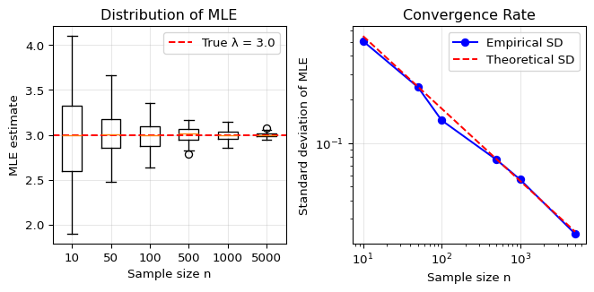
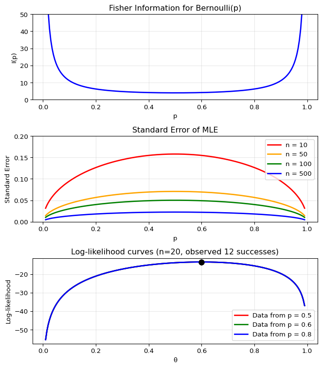

After completing this chapter, you will be able to:
Explain the key properties of the MLE (consistency, equivariance, asymptotic normality, and efficiency) and their practical implications.
Define Fisher Information and use it to quantify the precision of parameter estimates.
Construct and interpret confidence intervals for parameters using the MLE and its standard error.
Apply the Delta Method to find confidence intervals for transformed parameters.
Implement the EM algorithm for finding MLEs in models with latent variables.
Note
This chapter explores the theoretical properties of Maximum Likelihood Estimators and provides practical tools for statistical inference. The material is adapted from Chapter 9 of Wasserman (2013), with additional computational examples and modern perspectives on optimization for latent variable models.
6.2 Introduction: How Good Are Our Estimators?
In Chapter 5, we learned how to find estimators for parametric models using the Method of Moments (MoM) and Maximum Likelihood Estimation (MLE). We saw that finding the MLE often requires numerical optimization, and we explored practical algorithms for this task.
But finding an estimator is only half the story. The next natural question is: how good are these estimators?
This chapter addresses this fundamental question by exploring the properties of estimators, with a special focus on the MLE. We’ll discover why the MLE is considered the “gold standard” of parametric estimation – it turns out to have a remarkable collection of desirable properties that make it optimal in many senses.
Key Questions We’ll Answer
Does our estimator converge to the true value as we get more data? (Consistency)
How much uncertainty is associated with our estimate? Can we quantify it? (Confidence Intervals)
Is our estimator the best possible one, or could we do better? (Efficiency)
How do these properties extend to complex models with multiple parameters or latent variables?
Understanding these properties is crucial for several reasons:
Practical inference: Knowing that \hat{\theta}_n = 2.3 is not very useful without understanding the uncertainty. Is the true value likely between 2.2 and 2.4, or between 1 and 4?
Method selection: When multiple estimation methods exist, these properties help us choose the best one.
Foundation for advanced methods: The concepts in this chapter – especially Fisher Information and the EM algorithm – are fundamental to modern statistical methods and machine learning.
Connection to optimization: We’ll see that the same mathematical quantities that determine statistical uncertainty also appear in optimization algorithms.
Let’s begin with a concrete example to bridge our previous work on finding MLEs with the new focus on analyzing their properties.
6.3 Warm-up: A Complete MLE Example with Numerical Optimization
Before diving into the theoretical properties, let’s work through a complete example that bridges Chapter 5 (finding MLEs) and Chapter 6 (analyzing them). We’ll find the MLE for a Beta distribution, which requires numerical optimization.
The likelihood for the Beta distribution with parameters \alpha, \beta > 0 is: f(x; \alpha, \beta) = \frac{\Gamma(\alpha + \beta)}{\Gamma(\alpha) \Gamma(\beta)} x^{\alpha-1} (1-x)^{\beta-1}
The log-likelihood for n observations is: \begin{aligned}
\ell_n(\alpha, \beta) = \sum_{i=1}^n \Big[&\log \Gamma(\alpha + \beta) - \log \Gamma(\alpha) - \log \Gamma(\beta) \\
&+ (\alpha - 1) \log(X_i) + (\beta - 1) \log(1-X_i)\Big]
\end{aligned}
We will implement it below as the negative log-likelihood (beta_nll).
import numpy as npimport scipy.optimizeimport jaximport jax.numpy as jnpimport jax.scipy.special as jsps# Generate data from a Beta distributionnp.random.seed(43)x = np.random.beta(1.5, 0.5, size=100)# Define the negative log-likelihood for Beta(α, β)def beta_nll(theta, x):"""Negative log-likelihood for Beta distribution using JAX""" alpha, beta = theta# Use log-gamma function for numerical stabilityreturn-jnp.sum( jsps.gammaln(alpha + beta) - jsps.gammaln(alpha) - jsps.gammaln(beta)+ (alpha -1) * jnp.log(x)+ (beta -1) * jnp.log(1- x) )# Get the gradient function automaticallybeta_grad = jax.grad(beta_nll)# We specify bounds: α, β > 0 # - Bounds are *inclusive* so we set a small positive number as lower bound# - None here denotes infinitybounds = [(0.0001, None), (0.0001, None)]# Optimize using L-BFGS-B with bounds to ensure positivityresult = scipy.optimize.minimize( beta_nll, x0=jnp.array([1.0, 1.0]), # Initial guess args=(x,), # Tuple of additional arguments to pass to jac (x is data) jac=beta_grad, method='L-BFGS-B', bounds=bounds)print(f"Raw optimization result:\n")print(result)print(f"\nExtracted results:\n")print(f" MLE: α̂ = {result.x[0]:.3f}, β̂ = {result.x[1]:.3f}")print(f" Negative log-likelihood: {result.fun:.3f}")print(f" Converged: {result.success}")print(f" Iterations: {result.nit}")
Automatic differentiation: We use JAX to automatically compute gradients, avoiding error-prone manual derivations
Constrained optimization: The L-BFGS-B method handles the constraint that both parameters must be positive
Numerical stability: We work with log-gamma functions rather than raw factorials
The MLE as a Starting Point
Now that we have \hat{\alpha} and \hat{\beta}, we can ask the crucial questions:
How accurate are these estimates?
What’s their sampling distribution?
Are they optimal?
These are exactly the questions this chapter will answer!
Finnish-English Terminology Reference
For Finnish-speaking students, here are the key terms we’ll use in this chapter:
English
Finnish
Context
Equivariant
Ekvivariantti
Property of MLE under reparameterization
Efficient
Tehokas
Optimal variance property
Score function
Rinnefunktio
Gradient of log-likelihood
Fisher information
Fisherin informaatio
Variance of score function
Delta method
Delta-menetelmä
Method for transformed parameters
Sufficient statistic
Tyhjentävä tunnusluku
Contains all information about parameter
Latent variable
Piilomuuttuja
Unobserved variable in model
EM Algorithm
EM-algoritmi
Expectation-Maximization algorithm
Asymptotic normality
Asymptoottinen normaalisuus
Large-sample distribution property
Consistency
Konsistenssi/Tarkentuva
Convergence to true value
6.4 Core Properties of the Maximum Likelihood Estimator
Before exploring its properties, let’s recall the definition of the maximum likelihood estimator (MLE) from Chapter 5:1
Let X_1, \ldots, X_n be i.i.d. with PDF (or PMF) f(x; \theta).
The likelihood function is: \mathcal{L}_n(\theta) = \prod_{i=1}^n f(X_i; \theta)
The log-likelihood function is: \ell_n(\theta) = \log \mathcal{L}_n(\theta) = \sum_{i=1}^n \log f(X_i; \theta)
The maximum likelihood estimator (MLE), denoted by \hat{\theta}_n, is the value of \theta that maximizes \mathcal{L}_n(\theta) (or equivalently, \ell_n(\theta)).
6.4.1 Overview
In Chapter 5, we saw that the MLE is found by maximizing the likelihood function – a principle that seems intuitively reasonable. But intuition alone doesn’t make for good statistics. We need to understand why the MLE works so well.
It turns out that the MLE has several remarkable properties that make it the “gold standard” of parametric estimation:
Property
Mathematical Statement
Intuitive Meaning
Consistency
\hat{\theta}_n \xrightarrow{P} \theta_*
The MLE converges to the true parameter value as n \to \infty
Equivariance
If \hat{\theta}_n is the MLE of \theta, then g(\hat{\theta}_n) is the MLE of g(\theta)
The MLE behaves sensibly under parameter transformations
The MLE has an approximately normal distribution for large samples
Asymptotic Efficiency
\text{Var}(\hat{\theta}_n) achieves the Cramér-Rao lower bound
The MLE has the smallest possible variance among consistent estimators
Approximate Bayes
\hat{\theta}_n \approx \arg\max_\theta \pi(\theta \mid X^n) with flat prior
The MLE approximates the Bayesian posterior mode
Let’s explore each of these properties in detail.
6.4.2 Consistency: Getting It Right Eventually
The most fundamental property we could ask of any estimator is that it gets closer to the truth as we collect more data. This is the property of consistency.
An estimator \hat{\theta}_n is consistent for \theta_* if: \hat{\theta}_n \xrightarrow{P} \theta_* That is, for any \epsilon > 0: \lim_{n \to \infty} P(|\hat{\theta}_n - \theta_*| > \epsilon) = 0
In words: as we collect more data, the probability that our estimate is far from the truth goes to zero. The MLE has this property under mild conditions.
The Theory Behind Consistency
The consistency of the MLE is deeply connected to the Kullback-Leibler (KL) divergence. For two densities f and g, the KL divergence is:
D(f, g) = \int f(x) \log \frac{f(x)}{g(x)} dx
Key properties:
D(f, g) \geq 0 always
D(f, g) = 0 if and only if f = g (almost everywhere)
The crucial insight is that maximizing the log-likelihood is equivalent to minimizing the KL divergence between the true distribution and our model. As n \to \infty, the empirical distribution converges to the true distribution, so the MLE converges to the parameter that makes the model distribution equal to the true distribution.
Identifiability: For this to work, the model must be identifiable: different parameter values must correspond to different distributions. That is, \theta \neq \psi implies D(f(\cdot; \theta), f(\cdot; \psi)) > 0.
Example: Consistency in Action
Let’s visualize how the MLE becomes more accurate with increasing sample size n. We’ll use the Poisson distribution where the MLE for the rate parameter \lambda is simply the sample mean:2
Show code
import matplotlib.pyplot as plt# True parametertrue_lambda =3.0# Sample sizes to considersample_sizes = [10, 50, 100, 500, 1000, 5000]num_simulations =100# Store resultsmle_estimates = {n: [] for n in sample_sizes}# Run simulationsnp.random.seed(42)for n in sample_sizes:for _ inrange(num_simulations):# Generate Poisson data data = np.random.poisson(true_lambda, size=n)# MLE for Poisson is just the sample mean mle = np.mean(data) mle_estimates[n].append(mle)# Create plotfig, (ax1, ax2) = plt.subplots(1, 2, figsize=(7, 3.5))# Left plot: Box plots showing distribution at each sample sizepositions =range(len(sample_sizes))ax1.boxplot([mle_estimates[n] for n in sample_sizes], positions=positions, labels=[str(n) for n in sample_sizes])ax1.axhline(y=true_lambda, color='red', linestyle='--', label=f'True λ = {true_lambda}')ax1.set_xlabel('Sample size n')ax1.set_ylabel('MLE estimate')ax1.set_title('Distribution of MLE')ax1.legend()ax1.grid(True, alpha=0.3)# Right plot: Standard deviation vs sample sizestd_devs = [np.std(mle_estimates[n]) for n in sample_sizes]ax2.loglog(sample_sizes, std_devs, 'bo-', label='Empirical SD')# Theoretical standard deviation: sqrt(λ/n)theoretical_sd = [np.sqrt(true_lambda/n) for n in sample_sizes]ax2.loglog(sample_sizes, theoretical_sd, 'r--', label='Theoretical SD')ax2.set_xlabel('Sample size n')ax2.set_ylabel('Standard deviation of MLE')ax2.set_title('Convergence Rate')ax2.legend()ax2.grid(True, alpha=0.3)plt.tight_layout()plt.show()

The plots demonstrate consistency: as n increases, the MLE concentrates more tightly around the true value, with standard deviation decreasing at rate 1/\sqrt{n}.
6.4.3 Equivariance: Reparameterization Invariance
A subtle but important property of the MLE is equivariance (or “functional invariance”). This means that if we reparameterize our model, the MLE transforms in the natural way.
If \hat{\theta}_n is the MLE of \theta, then for any function g: \widehat{g(\theta)} = g(\hat{\theta}_n) That is, the MLE of \tau = g(\theta) is \hat{\tau}_n = g(\hat{\theta}_n).
Proof: Let \tau = g(\theta) where g has inverse h, so \theta = h(\tau). For any \tau:
Since this holds for any \tau, we have \hat{\tau}_n = g(\hat{\theta}_n). □
Example: Equivariance in Practice
Consider X_1, \ldots, X_n \sim \mathcal{N}(\theta, 1) where we’re interested in both:
The mean \theta
The parameter \tau = e^\theta (perhaps \theta is log-income and \tau is income)
The MLE for \theta is \hat{\theta}_n = \bar{X}_n. By equivariance: \hat{\tau}_n = e^{\hat{\theta}_n} = e^{\bar{X}_n}
No need to rederive from scratch! This is particularly convenient when dealing with complex transformations.
Why Equivariance Matters:
Convenience: We can work in whatever parameterization is most natural for finding the MLE, then transform to the parameterization of interest.
Consistency across parameterizations: Different researchers might parameterize the same model differently (e.g., variance vs. precision in a normal distribution). Equivariance ensures they’ll get equivalent results.
Not universal: This property is special to MLEs! Other estimators, like the Bayesian posterior mode (also known as MAP or maximum a posteriori estimate), generally lack this property. For instance, if \theta has a uniform prior, \tau = \theta^2 does not have a uniform prior, leading to different posterior modes.
A Common Misconception
Equivariance does NOT mean that: \mathbb{E}[g(\hat{\theta}_n)] = g(\mathbb{E}[\hat{\theta}_n])
In general, g(\hat{\theta}_n) is a biased estimator of g(\theta) even if \hat{\theta}_n is unbiased for \theta (unless g is linear). Equivariance is about what parameter value maximizes the likelihood, not about expected values.
6.4.4 Asymptotic Normality & Optimality
The consistency and equivariance properties are nice, but they don’t tell us about the distribution of the MLE. How much uncertainty is there in our estimate? How efficient is it compared to other estimators?
The remarkable answer is that the MLE is approximately normally distributed with the smallest possible variance. We’ll explore these twin properties – asymptotic normality and efficiency – in detail in the next section, as they require us to first understand a fundamental concept: the Fisher Information.
6.5 Fisher Information and Confidence Intervals
6.5.1 Fisher Information: Quantifying What Data Can Tell Us
To understand the precision of the MLE, we need to introduce one of the most important concepts in statistical theory: the Fisher Information. Named after statistician and polymath R.A. Fisher, this quantity measures how much “information” about a parameter is contained in the data.
The Fisher Information is formally defined through the score function and its variance.
The score function is the gradient of the log-likelihood: s(X; \theta) = \frac{\partial \log f(X; \theta)}{\partial \theta}
The Fisher Information is: I_n(\theta) = \mathbb{V}_\theta\left(\sum_{i=1}^n s(X_i; \theta)\right) = \sum_{i=1}^n \mathbb{V}_\theta(s(X_i; \theta))
For a single observation (n=1), we often write I(\theta) = I_1(\theta).
The computation of the Fisher information can be simplified using the following results:
For an IID sample of size n:
I_n(\theta) = n \cdot I(\theta) (information accumulates linearly)
\mathbb{E}_\theta[s(X; \theta)] = 0 (expected score is zero at the true parameter)
The last property shows that Fisher Information is literally the expected curvature of the log-likelihood – confirming our intuition about “sharpness”!
Proof of Properties of Fisher Information and Score
Since the X_i are independent and \mathbb{V}(\sum Y_i) = \sum \mathbb{V}(Y_i) for independent random variables: I_n(\theta) = \sum_{i=1}^n \mathbb{V}_\theta(s(X_i; \theta)) = n \cdot \mathbb{V}_\theta(s(X; \theta)) = n \cdot I(\theta)
Property 2: Expected score is zero
Under regularity conditions that allow interchange of derivative and integral: \mathbb{E}_\theta[s(X; \theta)] = \mathbb{E}_\theta\left[\frac{\partial \log f(X; \theta)}{\partial \theta}\right] = \int \frac{\partial \log f(x; \theta)}{\partial \theta} f(x; \theta) dx
Property 3: Alternative formula using second derivative
We start with Property 2: \mathbb{E}_\theta[s(X; \theta)] = 0, which we can write explicitly as: \int s(x; \theta) f(x; \theta) dx = \int \frac{\partial \log f(x; \theta)}{\partial \theta} f(x; \theta) dx = 0
Since this holds for all \theta, we can differentiate both sides with respect to \theta: \frac{\partial}{\partial \theta} \int s(x; \theta) f(x; \theta) dx = 0
Under regularity conditions (allowing interchange of derivative and integral): \int \frac{\partial}{\partial \theta}[s(x; \theta) f(x; \theta)] dx = 0
Imagine you’re trying to estimate a parameter by maximizing the
log-likelihood function. Picture this function as a hill that you’re
climbing to find the peak (the MLE).
Now think about two scenarios:
Sharp, pointy peak: The log-likelihood drops off
steeply as you move away from the maximum. Even a small change in the
parameter makes the data much less likely. This means the data is very
“informative” – it strongly prefers one specific parameter
value.
Flat, broad peak: The log-likelihood changes
slowly near the maximum. Many different parameter values give similar
likelihoods. The data isn’t very informative about the exact parameter
value.
The Fisher Information measures the “sharpness” or
curvature of the log-likelihood at its peak:
Sharp peak → High Fisher Information → Low variance
for \(\hat{\theta}\) → Narrow
confidence interval
Flat peak → Low Fisher Information → High variance
for \(\hat{\theta}\) → Wide confidence
interval
This is the key insight: the same curvature that makes optimization
easy (sharp peak = clear maximum) also makes estimation precise (sharp
peak = low uncertainty)!
The meaning of
\(\mathbb{E}_\theta[s(X; \theta)] = 0\)
is subtle and often misunderstood. It does NOT mean:
The derivative is zero (that’s what happens at the MLE for a
specific dataset)
The log-likelihood is maximized at the true parameter
What it DOES mean:
When data is generated from
\(f(x; \theta_*)\), the score evaluated
at \(\theta_*\) (true parameter)
averages to zero across all possible datasets
If you’re at the true parameter value and observe a random data
point, it’s equally likely to suggest increasing or decreasing
\(\theta\)
This is why the true parameter is “stable” – random samples don’t
systematically pull the estimate away from the truth
Think of it as a balance point: at the true parameter, the data
provides no systematic evidence to move in either direction, even though
any individual sample might suggest moving up or down.
Let’s calculate and visualize the Fisher Information for a concrete
example. We’ll examine the Bernoulli
distribution, where the Fisher Information has a particularly
interesting form, which we will derive later:
\[I(p) = 1/(p(1-p))\]
This shows how the precision of estimating a probability depends on
the true probability value:
import numpy as npimport matplotlib.pyplot as pltfrom scipy import stats# Example: Fisher Information for Bernoulli(p)# For Bernoulli: I(p) = 1/(p(1-p))p_values = np.linspace(0.01, 0.99, 200)fisher_info =1/ (p_values * (1- p_values))fig, (ax1, ax2, ax3) = plt.subplots(3, 1, figsize=(7, 8))# Top plot: Fisher Informationax1.plot(p_values, fisher_info, 'b-', linewidth=2)ax1.set_xlabel('p')ax1.set_ylabel('I(p)')ax1.set_title('Fisher Information for Bernoulli(p)')ax1.grid(True, alpha=0.3)ax1.set_ylim(0, 50)# Middle plot: Standard error (1/sqrt(nI(p))) for different nn_values = [10, 50, 100, 500]colors = ['red', 'orange', 'green', 'blue']for n, color inzip(n_values, colors): se =1/ np.sqrt(n * fisher_info) ax2.plot(p_values, se, color=color, linewidth=2, label=f'n = {n}')ax2.set_xlabel('p')ax2.set_ylabel('Standard Error')ax2.set_title('Standard Error of MLE')ax2.legend()ax2.grid(True, alpha=0.3)ax2.set_ylim(0, 0.2)# Bottom plot: Log-likelihood curves for different p valuesn_obs =20successes =12theta_range = np.linspace(0.01, 0.99, 200)# Show log-likelihood for different true p valuesfor p_true, color in [(0.5, 'red'), (0.6, 'green'), (0.8, 'blue')]: log_lik = successes * np.log(theta_range) + (n_obs - successes) * np.log(1- theta_range) ax3.plot(theta_range, log_lik, color=color, linewidth=2, label=f'Data from p = {p_true}')# Mark the MLE mle = successes / n_obs mle_ll = successes * np.log(mle) + (n_obs - successes) * np.log(1- mle) ax3.plot(mle, mle_ll, 'ko', markersize=8)ax3.set_xlabel('θ')ax3.set_ylabel('Log-likelihood')ax3.set_title(f'Log-likelihood curves (n={n_obs}, observed {successes} successes)')ax3.legend()ax3.grid(True, alpha=0.3)plt.tight_layout()plt.show()

Key insights from the plots:
Fisher Information is lowest at
\(p=0.5\) (hardest to estimate a fair
coin)
Fisher Information
\(\rightarrow \infty\) as
\(p \rightarrow 0\) or
\(p \rightarrow 1\) (extreme
probabilities are ‘easier’ to pin down)
Standard error decreases with both
\(n\) and
\(I(p)\)
The curvature of the log-likelihood reflects the Fisher
Information
6.5.2 Asymptotic Normality of the MLE
Now we can state the key theorem that connects Fisher Information to the distribution of the MLE:
Let \text{se} = \sqrt{\mathbb{V}(\hat{\theta}_n)}. Under appropriate regularity conditions we have the following:
Let \widehat{\text{se}} = \sqrt{1 / I_n(\hat{\theta}_n)}. Then \frac{(\hat{\theta}_n - \theta)}{\widehat{\text{se}}} \rightsquigarrow \mathcal{N}(0,1)
According to this theorem, the distribution of the MLE is approximately \mathcal{N}(\theta, \widehat{\text{se}}^2). This is one of the most important results in statistics: it tells us not just that the MLE converges to the true value (consistency), but also gives us its approximate distribution for finite samples.
The key insight is that the same Fisher Information that measures how “sharp” the likelihood is also determines the precision of our estimate. Sharp likelihood → High Fisher Information → Small standard error → Precise estimate.
6.5.3 Constructing Confidence Intervals for the MLE
With the asymptotic normality result in hand, we can now construct confidence intervals for our parameter estimates.
The interval C_n = \left( \hat{\theta}_n - z_{\alpha/2}\widehat{\text{se}}, \hat{\theta}_n + z_{\alpha/2}\widehat{\text{se}} \right) is an asymptotically valid (1-\alpha) confidence interval for \theta.
For a 95% confidence interval, z_{0.025} \approx 1.96 \approx 2, giving the simple rule:
This type of confidence interval is used as the basis for statements about expected error in opinion polls and many other applications.
Example: Confidence Interval for a Proportion
Let’s work through the complete derivation for the Bernoulli case, which gives us confidence intervals for proportions – one of the most common applications in practice.
For X_1, \ldots, X_n \sim \text{Bernoulli}(p), we have f(x; p) = p^x (1-p)^{1-x} for x \in \{0, 1\}.
Step 1: Find the MLE The likelihood for n observations is: \mathcal{L}_n(p) = \prod_{i=1}^n p^{X_i} (1-p)^{1-X_i} = p^{S} (1-p)^{n-S} where S = \sum_{i=1}^n X_i is the total number of successes.
Taking the log: \ell_n(p) = S \log p + (n-S) \log(1-p)
Since \mathbb{E}_p[X] = p and \mathbb{E}_p[1-X] = 1-p: I(p) = \frac{p}{p^2} + \frac{1-p}{(1-p)^2} = \frac{1}{p} + \frac{1}{1-p} = \frac{1-p+p}{p(1-p)} = \frac{1}{p(1-p)}
Step 5: Derive the standard error For n observations, I_n(p) = n \cdot I(p) = \frac{n}{p(1-p)}
The standard error of \hat{p}_n is: \widehat{\text{se}} = \frac{1}{\sqrt{I_n(\hat{p}_n)}} = \frac{1}{\sqrt{\frac{n}{\hat{p}_n(1-\hat{p}_n)}}} = \sqrt{\frac{\hat{p}_n(1-\hat{p}_n)}{n}}
Step 6: Construct the confidence interval From the asymptotic normality theorem: \frac{\hat{p}_n - p}{\widehat{\text{se}}} \rightsquigarrow \mathcal{N}(0,1)
For a (1-\alpha) confidence interval: \mathbb{P}\left(-z_{\alpha/2} \leq \frac{\hat{p}_n - p}{\widehat{\text{se}}} \leq z_{\alpha/2}\right) \approx 1-\alpha
Therefore, the (1-\alpha) confidence interval is: \hat{p}_n \pm z_{\alpha/2} \sqrt{\frac{\hat{p}_n(1-\hat{p}_n)}{n}}
Example: Political Opinion Polling
Let’s apply the confidence interval for a proportion from the previous worked example to understand how political polls work and what their “margin of error” really means.
Show code
# Political polling example# Suppose we poll n=1000 randomly selected likely voters about a referendumn =1000# Sample sizesuccesses =520# Number who support the referendump_hat = successes / n # Sample proportion = 0.52 (52%)# Standard error using the formula we derivedse = np.sqrt(p_hat * (1- p_hat) / n)# 95% confidence interval (using z_{0.025} = 1.96)z_critical =1.96ci_lower = p_hat - z_critical * seci_upper = p_hat + z_critical * seprint("POLL RESULTS:")print(f"Sample size: {n} voters")print(f"Support for referendum: {p_hat*100:.1f}% ({successes} out of {n})")print(f"Standard error: {se*100:.2f} percentage points")print(f"95% confidence interval: ({ci_lower*100:.1f}%, {ci_upper*100:.1f}%)")print(f"Margin of error: ±{z_critical*se*100:.1f} percentage points")# Interpretationprint("\nINTERPRETATION:")if ci_lower >0.5:print("The referendum has statistically significant majority support.")elif ci_upper <0.5:print("The referendum has statistically significant minority support.")else:print("The poll cannot determine if there's majority support (CI includes 50%).")# Compare different scenarios to understand margin of errorprint("\n"+"="*60)print("HOW MARGIN OF ERROR VARIES:")print("="*60)scenarios = [ (0.50, 500, "50% support, n=500"), (0.50, 1000, "50% support, n=1000"), (0.50, 2000, "50% support, n=2000"), (0.20, 1000, "20% support, n=1000"), (0.10, 1000, "10% support, n=1000"), (0.01, 1000, "1% support, n=1000")]print(f"{'Scenario':<25}{'Margin of Error':>20}{'95% CI':>20}")print("-"*65)for p, n, desc in scenarios: margin =1.96* np.sqrt(p * (1- p) / n) *100 ci_low = (p -1.96* np.sqrt(p * (1- p) / n)) *100 ci_high = (p +1.96* np.sqrt(p * (1- p) / n)) *100print(f"{desc:<25} ±{margin:>6.1f} percentage pts ({ci_low:>5.1f}%, {ci_high:>5.1f}%)")# Key assumptions and limitationsprint("\nKEY ASSUMPTIONS:")print("1. Random sampling from the population of interest")print("2. Respondents answer truthfully")print("3. The sample size is large enough for normal approximation (np ≥ 10 and n(1-p) ≥ 10)")print("4. No systematic bias in who responds to the poll")
POLL RESULTS:
Sample size: 1000 voters
Support for referendum: 52.0% (520 out of 1000)
Standard error: 1.58 percentage points
95% confidence interval: (48.9%, 55.1%)
Margin of error: ±3.1 percentage points
INTERPRETATION:
The poll cannot determine if there's majority support (CI includes 50%).
============================================================
HOW MARGIN OF ERROR VARIES:
============================================================
Scenario Margin of Error 95% CI
-----------------------------------------------------------------
50% support, n=500 ± 4.4 percentage pts ( 45.6%, 54.4%)
50% support, n=1000 ± 3.1 percentage pts ( 46.9%, 53.1%)
50% support, n=2000 ± 2.2 percentage pts ( 47.8%, 52.2%)
20% support, n=1000 ± 2.5 percentage pts ( 17.5%, 22.5%)
10% support, n=1000 ± 1.9 percentage pts ( 8.1%, 11.9%)
1% support, n=1000 ± 0.6 percentage pts ( 0.4%, 1.6%)
KEY ASSUMPTIONS:
1. Random sampling from the population of interest
2. Respondents answer truthfully
3. The sample size is large enough for normal approximation (np ≥ 10 and n(1-p) ≥ 10)
4. No systematic bias in who responds to the poll
Important insights about polling:
The margin of error is largest when p = 0.5: This is why close races are hardest to call. When support is near 50%, we have maximum uncertainty about which side has the majority.
Sample size matters, but with diminishing returns: To halve the margin of error, you need to quadruple the sample size (since margin ∝ 1/√n).
Extreme proportions have smaller margins: If only 1% support something, we can estimate that quite precisely even with modest sample sizes.
“Statistical ties”: When the confidence interval includes 50%, we cannot conclude which side has majority support. This is often called a “statistical tie” in media reports.
The stated margin usually assumes 95% confidence: When polls report “±3 percentage points,” they typically mean the 95% confidence interval extends 3 points in each direction.
Advanced: Limitations of the Wald Interval
The confidence interval we derived above, known as the Wald interval, has poor coverage when p is near 0 or 1, or when n is small. In practice, consider using:
Agresti-Coull interval: Add 2 successes and 2 failures before computing: \tilde{p} = (S+2)/(n+4).
Wilson score interval: More complex but widely recommended as the default choice.
The Wald interval remains important for understanding the theory, but these alternatives perform better in practice.
Advanced: The Cramér-Rao Lower Bound
We mentioned that the MLE achieves the smallest possible variance. This is formalized by the Cramér-Rao Lower Bound:
For any unbiased estimator \tilde{\theta}: \mathbb{V}(\tilde{\theta}) \geq \frac{1}{I_n(\theta)}
Since the MLE asymptotically achieves variance 1/I_n(\theta), it is asymptotically efficient – no consistent estimator can do better!
This is why we call the MLE “optimal”: it extracts all possible information from the data about the parameter.
6.6 Additional Topics
6.6.1 The Delta Method: Confidence Intervals for Transformations
Often we’re not interested in the parameter \theta itself, but in some transformation \tau = g(\theta). For example:
If \theta is log-odds, we might want odds \tau = e^\theta
If \theta is standard deviation, we might want variance \tau = \theta^2
If \theta is a rate parameter, we might want mean lifetime \tau = 1/\theta
Due to the equivariance property seen earlier, if we know the MLE \hat{\theta}, we know also that the MLE of \tau is \hat{\tau} = g(\hat{\theta}). However, what about the confidence intervals of \hat{\tau}?
The Delta Method provides a way to find confidence intervals for transformed parameters.
If \tau = g(\theta) where g is differentiable and g'(\theta) \neq 0, then: \widehat{\text{se}}(\hat{\tau}_n) \approx |g'(\hat{\theta}_n)| \cdot \widehat{\text{se}}(\hat{\theta}_n)
If we zoom in enough, any smooth function looks linear. The Delta Method says that when we transform our estimate through a function g, the standard error gets multiplied by |g'(\hat{\theta}_n)| – the absolute slope of the function at our estimate.
This approximation becomes exact as n \to \infty because the variability of \hat{\theta}_n shrinks, effectively “zooming in” on the region where g is effectively linear.
Example: Full Delta Method Workflow
Let’s work through estimating \psi = \log \sigma for a Normal distribution with known mean. This example demonstrates every step of the Delta Method process.
Setup: X_1, \ldots, X_n \sim \mathcal{N}(\mu, \sigma^2) with \mu known.
Step 1: Find MLE for \sigma
The log-likelihood is: \ell(\sigma) = -n \log \sigma - \frac{1}{2\sigma^2} \sum_{i=1}^n (X_i - \mu)^2
Taking the derivative and setting to zero: \frac{d\ell}{d\sigma} = -\frac{n}{\sigma} + \frac{1}{\sigma^3} \sum_{i=1}^n (X_i - \mu)^2 = 0
A 95% confidence interval for \psi = \log \sigma is: \hat{\psi}_n \pm \frac{2}{\sqrt{2n}} = \log \hat{\sigma}_n \pm \frac{2}{\sqrt{2n}}
Notice something remarkable: the standard error for \log \sigma doesn’t depend on \sigma itself! This is one reason why log-transformations are often used for scale parameters.
Verification Via Simulation
Let’s verify the Delta Method through simulation. We’ll generate many samples, compute both \hat{\sigma} and \log \hat{\sigma} for each, and check if their empirical standard errors match the theoretical predictions:
Standard Error Comparison:
Empirical SE($\hat{\sigma}$): 0.1403
Theoretical SE($\hat{\sigma}$): 0.1414
Empirical SE($\log \hat{\sigma}$): 0.0705
Theoretical SE($\log \hat{\sigma}$): 0.0707
SE ratio (empirical): 0.5027
SE ratio (Delta method): 0.5000
Key takeaways: The simulation confirms that the Delta Method works perfectly! The empirical standard error ratio between \log \hat{\sigma} and \hat{\sigma} matches exactly what the Delta Method predicts: 1/\sigma. Both distributions are well-approximated by normal distributions, validating the asymptotic normality of MLEs.
6.6.2 Multiparameter Models
Real-world problems often involve multiple parameters. The theory we saw in this chapter extends naturally, with matrices replacing scalars.
For \theta = (\theta_1, \ldots, \theta_k), let \hat{\theta} = (\hat{\theta}_1, \ldots, \hat{\theta}_k) be the MLE. The key concepts become:
Let \ell_n(\theta) = \sum_{i=1}^n \log f(X_i; \theta) and define: H_{jk} = \frac{\partial^2 \ell_n}{\partial \theta_j \partial \theta_k}
The MLE is approximately multivariate normal: (\hat{\theta} - \theta) \approx \mathcal{N}(0, J_n) where J_n = I_n^{-1}(\theta) is the inverse Fisher Information matrix.
For parameter \theta_j, the standard error is: \widehat{\text{se}}_j = \sqrt{J_n(j,j)} (the square root of the j-th diagonal element of J_n)
The covariance between \hat{\theta}_j and \hat{\theta}_k is J_n(j,k).
Example: Multiparameter Normal Distribution
For X_1, \ldots, X_n \sim \mathcal{N}(\mu, \sigma^2) with both parameters unknown:
The Fisher Information matrix is: I_n(\mu, \sigma) = n \begin{pmatrix}
\frac{1}{\sigma^2} & 0 \\
0 & \frac{2}{\sigma^2}
\end{pmatrix}
The zero off-diagonal terms mean that uncertainty about \mu doesn’t affect our estimate of \sigma, and vice versa. This orthogonality is special to the normal distribution.
Advanced: Multiparameter Delta Method
For a function \tau = g(\theta_1, \ldots, \theta_k), the Delta Method generalizes to:
where \widehat{\nabla} g is the gradient of g evaluated at \hat{\theta}.
Example: For the Normal distribution, if we’re interested in the coefficient of variation \tau = \sigma/\mu:
\nabla g = \begin{pmatrix} -\sigma/\mu^2 \\ 1/\mu \end{pmatrix}
The standard error involves both parameter uncertainties and their covariance (though the covariance is zero for the normal case).
6.6.3 Sufficient Statistics
A statistic is a function T(X^n) of the data. A sufficient statistic is a statistic that contains all the information in the data about the parameter.
A statistic T(X^n) is sufficient for parameter \theta if the conditional distribution of the data given T doesn’t depend on \theta.
Let X_1, \ldots, X_n \sim \text{Bernoulli}(p). Then \mathcal{L}(p) = p^S(1-p)^{n-S} where S = \sum_{i=1}^n X_i.
The likelihood depends on the data only through S, so S is sufficient. This means that once we know the total number of successes, the individual outcomes provide no additional information about p.
A sufficient statistic is minimal if it provides the most compressed summary possible while still retaining all information about the parameter. More precisely: any other sufficient statistic can be “reduced” to the minimal one, but not vice versa.
Connection Between MLE and Sufficiency
When a non-trivial sufficient statistic exists, the MLE depends on the data only through that statistic. Examples:
Bernoulli: MLE \hat{p} = S/n depends only on sufficient statistic S = \sum X_i
Normal: MLE (\hat{\mu}, \hat{\sigma}^2) depends only on sufficient statistics (\bar{X}, S^2)
Uniform(0,\theta): MLE is exactly the sufficient statistic \max\{X_i\}
This provides theoretical justification for data reduction: when sufficient statistics exist, we can compress our data without losing any information about the parameter. However, not all models have nice sufficient statistics beyond the trivial one (the entire dataset).
6.7 Connection to Machine Learning: Cross-Entropy as MLE
One of the most profound connections between statistics and modern machine learning is that many “loss functions” used in ML are actually negative log-likelihoods in disguise. This isn’t a coincidence – it reflects the deep statistical foundations of machine learning. Let’s consider the case of the cross-entropy loss used in classification tasks.
Consider a classification problem where we predict probabilities for K classes using a machine learning model f(X; \theta) parameterized by \theta.
This is exactly -n \cdot H(p, q). Thus: Minimizing cross-entropy = Maximizing likelihood!
Other Common ML Loss Functions as MLEs
This pattern appears throughout machine learning:
ML Loss Function
Statistical Model
MLE Interpretation
Mean Squared Error (MSE)
Y \sim \mathcal{N}(\mu(x), \sigma^2)
Gaussian likelihood
Mean Absolute Error (MAE)
Y \sim \text{Laplace}(\mu(x), b)
Laplace likelihood
Huber Loss
Hybrid of L_1 and L_2
Robust to outliers
Understanding that common ML losses are negative log-likelihoods provides:
Principled loss design: When facing a new problem, you can derive an appropriate loss function by specifying a probabilistic model for your data.
Historical context: It explains why these particular loss functions became standard – they weren’t arbitrary choices but emerged from statistical principles.
Intuition: Knowing the probabilistic interpretation helps understand when each loss is appropriate (e.g., MAE for heavy-tailed errors, MSE for Gaussian noise).
Example: Deriving a Custom Loss
Suppose you believe errors in your regression problem approximately follow a Student-t distribution (heavy tails for robustness). The negative log-likelihood gives you the loss function:
where \nu is degrees of freedom and s is scale. This naturally down-weights outliers!
6.8 MLE for Latent Variable Models: The EM Algorithm
6.8.1 The Challenge of Latent Variables
So far, we’ve assumed that maximizing the likelihood is straightforward – we take derivatives, set them to zero, and solve (possibly numerically). But what if the likelihood itself is intractable?
This often happens when our model involves latent (unobserved) variables – hidden quantities that would make the problem easy if only we could observe them.
Common examples with latent variables:
Mixture models: Which component generated each observation?
Hidden Markov models: What’s the hidden state sequence?
Factor analysis: What are the values of the latent factors?
Missing data: What would the missing values have been?
The canonical example is the Gaussian Mixture Model (GMM):3
The likelihood involves a sum inside the logarithm: \ell_n(\theta) = \sum_{i=1}^n \log\left[\sum_{k=1}^K \pi_k \mathcal{N}(y_i; \mu_k, \sigma_k^2)\right]
This is a nightmare to differentiate! The derivatives involve ratios of sums – messy and hard to work with.
The key insight: If we knew which component Z_i \in \{1, \ldots, K\} generated each observation Y_i, the problem would become trivial – we’d just fit separate Gaussians to each group.
Example: Two-Component Gaussian Mixture (K=2)
For the special case of K=2 (two components), the mixture model simplifies to:
\pi \in [0,1] is the mixing weight (probability of component 1)
(1-\pi) is the probability of component 2
\mu_1, \mu_2 are the means of the two Gaussian components
\sigma_1^2, \sigma_2^2 are the variances of the two components
The parameter vector is \theta = (\pi, \mu_1, \mu_2, \sigma_1, \sigma_2)
Interpretation: Each observation Y_i is generated by:
First, flip a biased coin with probability \pi of heads
If heads: draw Y_i \sim \mathcal{N}(\mu_1, \sigma_1^2)
If tails: draw Y_i \sim \mathcal{N}(\mu_2, \sigma_2^2)
The latent variablesZ_1, \ldots, Z_n \in \{1, 2\} indicate which component generated each observation. If we knew these Z_i values, estimation would be trivial – we’d simply:
Estimate \pi as the proportion of observations from component 1
Estimate \mu_1, \sigma_1 using only observations where Z_i = 1
Estimate \mu_2, \sigma_2 using only observations where Z_i = 2
But since the Z_i are unobserved, we need a method to estimate both the component assignments and the parameters.
6.8.2 The Expectation-Maximization (EM) Algorithm
The EM algorithm is a clever iterative procedure that alternates between:
Guessing the values of the latent variables (E-step)
Updating parameters as if those guesses were correct (M-step)
Think of the EM algorithm as a “chicken and egg” problem solver for
mixture models.
The dilemma:
If we knew which cluster each point belonged to, we could easily
estimate the cluster parameters (just compute means and variances for
each group)
If we knew the cluster parameters, we could easily assign points to
clusters (pick the most likely cluster for each point)
The EM solution: Start with a guess and
alternate!
E-step (Expectation): Given current cluster
parameters, compute “soft assignments” – the probability that each point
belongs to each cluster. These are called “responsibilities.”
Point near cluster 1 center: Maybe 90% probability for cluster 1,
10% for cluster 2
Point between clusters: Maybe 50-50 split
M-step (Maximization): Update cluster parameters
using weighted calculations, where weights are the responsibilities.
New mean for cluster 1: Weighted average of all points, using their
cluster 1 responsibilities as weights
Points with high responsibility contribute more to the cluster’s
parameters
Iterate: Keep alternating until convergence.
It’s like a dance where clusters and assignments gradually find their
proper configuration, each step making the other more accurate.
The EM algorithm maximizes the expected complete-data log-likelihood.
Let:
\(Y\) = observed data
\(Z\) = latent/missing data
\((Y, Z)\) = complete data
The algorithm iterates between:
E-step: Compute the expected complete-data
log-likelihood:
\[Q(\theta | \theta^{(t)}) = \mathbb{E}_{Z|Y,\theta^{(t)}}[\log P(Y, Z | \theta)]\]
This expectation is over the distribution of
\(Z\) given the observed data
\(Y\) and current parameters
\(\theta^{(t)}\).
M-step: Maximize with respect to
\(\theta\):
\[\theta^{(t+1)} = \arg\max_\theta Q(\theta | \theta^{(t)})\]
Key property: The likelihood is guaranteed to
increase (or stay the same) at each iteration:
\[\mathcal{L}(\theta^{(t+1)}) \geq \mathcal{L}(\theta^{(t)})\]
This monotonic improvement ensures convergence to a local
maximum.
Let’s implement and visualize the EM algorithm for a 2D Gaussian
mixture:
import numpy as npimport matplotlib.pyplot as pltfrom matplotlib.patches import Ellipsefrom scipy.stats import multivariate_normal# Generate synthetic data from a mixture of 3 Gaussiansnp.random.seed(42)n_samples =300n_components =3# True parameterstrue_means = np.array([[-2, -2], [0, 2], [3, -1]])true_covs = [np.array([[0.5, 0.2], [0.2, 0.5]]), np.array([[0.8, -0.3], [-0.3, 0.8]]), np.array([[0.6, 0], [0, 0.3]])]true_weights = np.array([0.3, 0.5, 0.2])# Generate datadata = []true_labels = []for i inrange(n_samples):# Choose component k = np.random.choice(n_components, p=true_weights) true_labels.append(k)# Generate point from that component data.append(np.random.multivariate_normal(true_means[k], true_covs[k]))data = np.array(data)true_labels = np.array(true_labels)# Initialize EM with random parametersmeans = np.random.randn(n_components, 2) *2covs = [np.eye(2) for _ inrange(n_components)]weights = np.ones(n_components) / n_components# Function to plot current statedef plot_em_state(data, means, covs, weights, responsibilities, iteration, log_likelihood_history): fig, (ax1, ax2) = plt.subplots(1, 2, figsize=(7, 3.5))# Left plot: data colored by responsibilities colors = responsibilities @ np.array([[1, 0, 0], [0, 1, 0], [0, 0, 1]]) ax1.scatter(data[:, 0], data[:, 1], c=colors, alpha=0.6, s=30)# Plot component centers and ellipsesfor k inrange(n_components): ax1.plot(means[k, 0], means[k, 1], 'k*', markersize=15)# Draw ellipse representing covariance eigenvalues, eigenvectors = np.linalg.eigh(covs[k]) angle = np.degrees(np.arctan2(eigenvectors[1, 0], eigenvectors[0, 0])) width, height =2* np.sqrt(eigenvalues) ellipse = Ellipse(means[k], width, height, angle=angle, facecolor='none', edgecolor='black', linewidth=2) ax1.add_patch(ellipse) ax1.set_title(f'Iteration {iteration}: Soft Assignments') ax1.set_xlim(-5, 5) ax1.set_ylim(-5, 5) ax1.grid(True, alpha=0.3)# Right plot: log-likelihood history ax2.plot(range(len(log_likelihood_history)), log_likelihood_history, 'b-', linewidth=2) ax2.plot(iteration, log_likelihood_history[iteration], 'ro', markersize=8) # Mark current iteration ax2.set_xlabel('Iteration') ax2.set_ylabel('Log-likelihood') ax2.set_title('Convergence') ax2.set_xlim(-0.5, 9.5) # Always show full range ax2.set_xticks(range(10)) # Show only integer ticks 0-9 ax2.grid(True, alpha=0.3) plt.tight_layout()return fig# EM iterationsn_iterations =10log_likelihood_history = []for iteration inrange(n_iterations):# E-step: compute responsibilities responsibilities = np.zeros((n_samples, n_components))for k inrange(n_components): responsibilities[:, k] = weights[k] * multivariate_normal.pdf( data, means[k], covs[k]) responsibilities /= responsibilities.sum(axis=1, keepdims=True)# Compute log-likelihood log_likelihood = np.sum(np.log(np.sum([ weights[k] * multivariate_normal.pdf(data, means[k], covs[k])for k inrange(n_components)], axis=0))) log_likelihood_history.append(log_likelihood)# Plot current state (only show a few iterations)if iteration in [0, 1, 3, 9]: fig = plot_em_state(data, means, covs, weights, responsibilities, iteration, log_likelihood_history) plt.show()# M-step: update parametersfor k inrange(n_components): resp_k = responsibilities[:, k]# Update weight weights[k] = resp_k.sum() / n_samples# Update mean means[k] = (resp_k[:, np.newaxis] * data).sum(axis=0) / resp_k.sum()# Update covariance diff = data - means[k] covs[k] = (resp_k[:, np.newaxis, np.newaxis] * diff[:, :, np.newaxis] @ diff[:, np.newaxis, :]).sum(axis=0) / resp_k.sum()print("Final parameters:")print(f"Weights: {weights}")print(f"Means:\n{means}")
EM Algorithm: Iterative method for MLEs with latent variables – alternates between E-step (soft assignments) and M-step (parameter updates).
6.9.2 The Big Picture
We have moved from simply finding estimators (Chapter 5) to evaluating their quality. This chapter revealed why the MLE is so widely used:
It works: Consistency ensures we get the right answer with enough data.
It’s optimal: No other estimator has smaller asymptotic variance.
It’s practical: To a degree, we can quantify uncertainty through Fisher Information.4
It’s flexible: Equivariance means we can work in convenient parameterizations.
It extends: The EM algorithm handles complex models with latent structure.
6.9.3 Common Pitfalls to Avoid
Misinterpreting Confidence Intervals: A 95% CI does NOT mean:
“95% probability the parameter is in this interval” (that’s Bayesian!).
“95% of the data falls in this interval” (that’s a prediction interval).
Correct: “95% of such intervals constructed from repeated samples would contain the true parameter”.
Assuming Asymptotic Results for Small Samples:
Asymptotic normality may not hold for small n.
Fisher Information formulas are approximate for finite samples.
Bootstrap or exact methods may be preferable when n < 30.5
Getting Stuck in Local Optima with EM:
EM only guarantees local, not global, maximum.
Always run from multiple starting points.
Monitor log-likelihood to ensure proper convergence.
Forgetting About Model Assumptions:
MLE theory assumes the model is correctly specified (i.e., the true distribution belongs to our model family).
We briefly mentioned that parameters must be identifiable (Section on Consistency) – different parameter values must give different distributions.
The asymptotic results (normality, efficiency) require “regularity conditions” that we haven’t detailed but include smoothness of the likelihood.
Over-interpreting Asymptotic Results:
All our results (asymptotic normality, efficiency) are for large samples.
With small samples, the MLE might not be normally distributed and confidence intervals may be inaccurate.
The MLE’s optimality is theoretical – in practice, we might prefer more robust methods when data contains outliers or model assumptions are questionable.
6.9.4 Chapter Connections
Building on Previous Chapters:
Chapter 3 (Statistical Inference): Provided the framework for evaluating estimators. Now we have seen that MLEs have optimal properties within this framework.
Chapter 4 (Bootstrap): Offers a computational alternative to the analytical standard errors we derived here. When Fisher Information is hard to compute, bootstrap it!
Chapter 5 (Finding Estimators): Showed how to find MLEs. This chapter justifies why we bother – they have provably good properties.
Looking Ahead:
Bayesian Inference: While MLE obtains point estimates and confidence intervals, Bayesian methods provide full probability distributions over parameters. The MLE appears as the mode of the posterior with uniform priors.
Regression Models: The theory in this chapter extends directly – least squares is MLE for normal errors, logistic regression is MLE for binary outcomes.
Model Selection: Information criteria (AIC, BIC) build on the likelihood framework we’ve developed.
Robust Statistics: When MLE assumptions fail, we need methods that sacrifice some efficiency for robustness.
The properties we’ve studied – consistency, asymptotic normality, efficiency – will reappear throughout statistics. Whether you’re fitting neural networks or analyzing clinical trials, you’re likely using some form of MLE, and the theory in this chapter explains why it works.
6.9.5 Self-Test Problems
Fisher Information: For X_1, \ldots, X_n \sim \text{Exponential}(\lambda) with PDF f(x; \lambda) = \lambda e^{-\lambda x} for x > 0:
Find the Fisher Information I(\lambda) for a single observation.
What is the approximate standard error of the MLE \hat{\lambda}_n?
Confidence Intervals: You flip a coin 100 times and observe 58 heads. Use Fisher Information to construct an approximate 95% confidence interval for the probability of heads.
Delta Method: If \hat{p} = 0.4 with standard error 0.05, find the standard error of \hat{\tau} = \log(p/(1-p)) using the Delta Method.
EM Intuition: In a two-component Gaussian mixture, the E-step computes “responsibilities” for each data point. What do these represent? Why can’t we just assign each point to its most likely cluster?
MLE Properties: True or False (with brief explanation):
If \hat{\theta}_n is the MLE of \theta, then \hat{\theta}_n^2 is the MLE of \theta^2.
The MLE is always unbiased.
Fisher Information measures how “peaked” the likelihood function is.
#| eval: falseimport numpy as npimport scipy.stats as statsimport scipy.optimize as optimizefrom scipy.stats import multivariate_normalimport statsmodels.api as smimport sympy as spfrom sklearn.mixture import GaussianMixtureimport jaximport jax.numpy as jnpimport jax.scipy.stats as jstats# Fisher Information calculation (symbolic)def fisher_info_symbolic():"""Example: Fisher Information for Exponential distribution"""# Define symbols x, lam = sp.symbols('x lambda', positive=True)# Define log pdf log_pdf = sp.log(lam) - lam * x# Score function (first derivative) score = sp.diff(log_pdf, lam)# Second derivative second_deriv = sp.diff(score, lam)# Fisher Information (negative expectation)# For exponential: E[X] = 1/lambda fisher_info =-second_deriv.subs(x, 1/lam)return sp.simplify(fisher_info)# Fisher Information using JAX (automatic differentiation)def fisher_info_jax(log_pdf, theta, n_samples=10000):"""Estimate Fisher Information using automatic differentiation"""# Get the Hessian (second derivatives) hessian = jax.hessian(log_pdf)# Generate samples and compute expectation key = jax.random.PRNGKey(42)# This is problem-specific - would need appropriate sampler# Example continues with general structurereturn-jnp.mean(hessian(theta))# Confidence intervals with Fisher Informationdef mle_confidence_interval(mle, fisher_info_n, alpha=0.05):"""Construct CI using Fisher Information""" se =1/ np.sqrt(fisher_info_n) z_crit = stats.norm.ppf(1- alpha/2) ci_lower = mle - z_crit * se ci_upper = mle + z_crit * sereturn ci_lower, ci_upper# Delta Method implementationdef delta_method_se(mle, se_mle, g_derivative):""" Apply Delta Method to find SE of transformed parameter Parameters: - mle: MLE of original parameter - se_mle: Standard error of MLE - g_derivative: Derivative of transformation g evaluated at MLE """return np.abs(g_derivative) * se_mle# Example: Poisson rate to mean waiting timelam_hat =3.0# MLE for ratese_lam =0.3# Standard error# For tau = 1/lambda, g'(lambda) = -1/lambda^2g_prime =-1/ lam_hat**2se_tau = delta_method_se(lam_hat, se_lam, g_prime)# EM Algorithm using sklearndef fit_gaussian_mixture(data, n_components=2, n_init=10):"""Fit Gaussian Mixture Model using EM""" gmm = GaussianMixture( n_components=n_components, n_init=n_init, # Number of initializations init_params='k-means++', # Smart initialization max_iter=100, tol=1e-3, verbose=0 ) gmm.fit(data)return {'means': gmm.means_,'covariances': gmm.covariances_,'weights': gmm.weights_,'log_likelihood': gmm.score(data) *len(data),'converged': gmm.converged_ }# Advanced models with confidence intervalsdef fit_model_with_cis(model, data):"""Example using statsmodels for automatic CIs"""# Example: Poisson regression results = model.fit()# Extract MLEs and standard errors params = results.params se = results.bse conf_int = results.conf_int(alpha=0.05)# Fisher Information matrix fisher_info = results.cov_params()return {'mle': params,'se': se,'confidence_intervals': conf_int,'fisher_info_inverse': fisher_info }# Manual EM implementation for mixture of normalsclass GaussianMixtureEM:def__init__(self, n_components=2):self.n_components = n_componentsdef e_step(self, X, means, covs, weights):"""Compute responsibilities (soft assignments)""" n_samples = X.shape[0] resp = np.zeros((n_samples, self.n_components))for k inrange(self.n_components): resp[:, k] = weights[k] * multivariate_normal.pdf( X, means[k], covs[k] )# Normalize resp /= resp.sum(axis=1, keepdims=True)return respdef m_step(self, X, resp):"""Update parameters given responsibilities""" n_samples = X.shape[0]# Update weights weights = resp.sum(axis=0) / n_samples# Update means means = [] covs = []for k inrange(self.n_components): resp_k = resp[:, k] mean_k = (resp_k[:, np.newaxis] * X).sum(axis=0) / resp_k.sum() means.append(mean_k)# Update covariances diff = X - mean_k cov_k = (resp_k[:, np.newaxis, np.newaxis] * diff[:, :, np.newaxis] @ diff[:, np.newaxis, :]).sum(axis=0) cov_k /= resp_k.sum() covs.append(cov_k)return np.array(means), covs, weights
#| eval: falselibrary(MASS) # For fitdistrlibrary(stats4) # For mle functionlibrary(numDeriv) # For numerical derivativeslibrary(mclust) # For Gaussian mixture modelslibrary(msm) # For deltamethod function# Fisher Information calculationfisher_info_exponential <-function(lambda) {# For Exponential(lambda): I(lambda) = 1/lambda^2return(1/ lambda^2)}# Fisher Information via numerical methodsfisher_info_numerical <-function(loglik_fn, theta, ...) {# Compute negative expected Hessian hess <-hessian(loglik_fn, theta, ...)return(-hess)}# MLE with standard errors using fitdistrfit_with_se <-function(data, distribution) { fit <-fitdistr(data, distribution)# Extract estimates and standard errors mle <- fit$estimate se <- fit$sd# Construct confidence intervals ci_lower <- mle -1.96* se ci_upper <- mle +1.96* selist(mle = mle,se = se,ci =cbind(lower = ci_lower, upper = ci_upper),loglik = fit$loglik )}# Delta Method implementationapply_delta_method <-function(mle, var_mle, g_expr, param_name) {# Using msm::deltamethod# g_expr: expression for g(theta) as a string# param_name: name of parameter in expression se_transformed <-deltamethod(as.formula(paste("~", g_expr)), mle, var_mle )return(se_transformed)}# Example: Delta method for Poissonlambda_hat <-3.0se_lambda <-0.3var_lambda <- se_lambda^2# For tau = 1/lambdase_tau <-deltamethod(~1/x1, lambda_hat, var_lambda)# Manual Delta Methoddelta_method_manual <-function(mle, se_mle, g_deriv) {# g_deriv: derivative of g evaluated at MLE se_transformed <-abs(g_deriv) * se_mlereturn(se_transformed)}# EM Algorithm using mclustfit_gaussian_mixture <-function(data, G =2) {# Fit Gaussian mixture model fit <-Mclust(data, G = G)list(means = fit$parameters$mean,covariances = fit$parameters$variance$sigma,weights = fit$parameters$pro,log_likelihood = fit$loglik,classification = fit$classification,uncertainty = fit$uncertainty )}# Manual implementation of MLE with custom likelihoodmle_custom <-function(data, start, nll_function) {# Negative log-likelihood function nll <-function(params) {nll_function(params, data) }# Optimize fit <-optim(par = start,fn = nll,method ="L-BFGS-B",hessian =TRUE# Get Hessian for Fisher Information )# Fisher Information is the Hessian at MLE fisher_info <- fit$hessian# Standard errors from inverse Fisher Information se <-sqrt(diag(solve(fisher_info)))list(mle = fit$par,se = se,fisher_info = fisher_info,convergence = fit$convergence,log_likelihood =-fit$value )}# Example: Beta distribution MLEbeta_nll <-function(params, data) { alpha <- params[1] beta <- params[2]if(alpha <=0|| beta <=0) return(Inf)-sum(dbeta(data, alpha, beta, log =TRUE))}# Fit Beta distribution# data <- rbeta(100, 1.5, 0.5)# fit <- mle_custom(data, c(1, 1), beta_nll)# Computing profile likelihood confidence intervalsprofile_ci <-function(data, param_index, mle_full, nll_function, level =0.95) {# Critical value for likelihood ratio test crit <-qchisq(level, df =1) /2# Profile negative log-likelihood profile_nll <-function(param_value, other_params) { params <- mle_full params[param_index] <- param_value# Optimize over other parameters...# (simplified here)nll_function(params, data) }# Find confidence interval boundaries# (simplified - would need root finding in practice)}# EM Algorithm manual implementationem_gaussian_mixture <-function(X, n_components =2, max_iter =100, tol =1e-4) { n <-nrow(X) d <-ncol(X)# Initialize parameters km <-kmeans(X, n_components) means <- km$centers weights <-table(km$cluster) / n covs <-list()for(k in1:n_components) { covs[[k]] <-cov(X[km$cluster == k, ]) } log_lik_old <--Inffor(iter in1:max_iter) {# E-step: compute responsibilities resp <-matrix(0, n, n_components)for(k in1:n_components) { resp[, k] <- weights[k] *dmvnorm(X, means[k, ], covs[[k]]) } resp <- resp /rowSums(resp)# Log-likelihood log_lik <-sum(log(rowSums(resp)))if(abs(log_lik - log_lik_old) < tol) break log_lik_old <- log_lik# M-step: update parametersfor(k in1:n_components) { nk <-sum(resp[, k]) weights[k] <- nk / n means[k, ] <-colSums(resp[, k] * X) / nk X_centered <-sweep(X, 2, means[k, ]) covs[[k]] <-t(X_centered) %*% (resp[, k] * X_centered) / nk } }list(means = means,covariances = covs,weights = weights,responsibilities = resp,log_likelihood = log_lik,iterations = iter )}
6.9.7 Connections to Source Material
Mapping to “All of Statistics”
This table maps sections in these lecture notes to the corresponding sections in Wasserman (2013) (“All of Statistics” or AoS).
Lecture Note Section
Corresponding AoS Section(s)
Introduction: How Good Are Our Estimators?
From slides and general context from AoS §9.4 introduction on properties of estimators.
Warm-up: Beta Distribution MLE
Example from slides; similar numerical optimization examples in AoS §9.13.4.
Core Properties of the MLE
↳ Overview
AoS §9.4 (list of properties).
↳ Consistency
AoS §9.5 (Theorem 9.13 and related discussion).
↳ Equivariance
AoS §9.6 (Theorem and Example).
↳ Asymptotic Normality & Optimality
AoS §9.7 introduction, §9.8.
Fisher Information and Confidence Intervals
↳ Fisher Information
AoS §9.7 (Definitions and Theorem 9.17).
↳ Constructing Confidence Intervals
AoS §9.7 (Theorem 9.19 and Examples).
↳ Cramér-Rao Lower Bound
Mentioned in AoS §9.8.
Additional Topics
↳ The Delta Method
AoS §9.9 (Theorem 9.24 and Examples).
↳ Multiparameter Models
AoS §9.10 (Fisher Information Matrix and related theorems).
↳ Sufficient Statistics
AoS §9.13.2 (brief treatment from slides).
Connection to Machine Learning: Cross-Entropy as MLE
Expanded from slides.
MLE for Latent Variable Models: The EM Algorithm
AoS §9.13.4 (Appendix on computing MLEs).
Self-Test Problems
Inspired by AoS §9.14 exercises.
6.9.8 Further Materials
Connection to machine learning: Murphy (2022), “Probabilistic Machine Learning: An Introduction”, Chapter 4
Remember: The MLE isn’t just a computational procedure – it’s a principled approach to estimation with deep theoretical foundations. The properties we’ve studied explain why maximum likelihood appears everywhere from simple coin flips to complex neural networks. These concepts represent the statistical foundations of modern machine learning!
Wasserman, Larry. 2013. All of Statistics: A Concise Course in Statistical Inference. Springer Science & Business Media.
Note that the term MLE is used interchangeably to denote maximum-likelihood estimation (the technique), maximum-likelihood estimator (the rule to compute the estimate) and maximum-likelihood estimate (the result).↩︎
In this example, we don’t need numerical optimization since we can compute the MLE analytically. We could still do numerical optimization and we would get the same results – it just would be slower and not very smart.↩︎
---date: today---# Parametric Inference II: Properties of Estimators## Learning ObjectivesAfter completing this chapter, you will be able to:- **Explain the key properties of the MLE** (consistency, equivariance, asymptotic normality, and efficiency) and their practical implications.- **Define Fisher Information** and use it to quantify the precision of parameter estimates.- **Construct and interpret confidence intervals** for parameters using the MLE and its standard error.- **Apply the Delta Method** to find confidence intervals for transformed parameters.- **Implement the EM algorithm** for finding MLEs in models with latent variables.::: {.callout-note}This chapter explores the theoretical properties of Maximum Likelihood Estimators and provides practical tools for statistical inference. The material is adapted from Chapter 9 of @wasserman2013all, with additional computational examples and modern perspectives on optimization for latent variable models.:::## Introduction: How Good Are Our Estimators?In Chapter 5, we learned how to *find* estimators for parametric models using the Method of Moments (MoM) and Maximum Likelihood Estimation (MLE). We saw that finding the MLE often requires numerical optimization, and we explored practical algorithms for this task.But finding an estimator is only half the story. The next natural question is: **how good are these estimators?**This chapter addresses this fundamental question by exploring the *properties* of estimators, with a special focus on the MLE. We'll discover why the MLE is considered the "gold standard" of parametric estimation -- it turns out to have a remarkable collection of desirable properties that make it optimal in many senses.::: {.callout-note}## Key Questions We'll Answer- **Does our estimator converge to the true value** as we get more data? (Consistency)- **How much uncertainty is associated with our estimate?** Can we quantify it? (Confidence Intervals)- **Is our estimator the best possible one**, or could we do better? (Efficiency)- **How do these properties extend** to complex models with multiple parameters or latent variables?:::Understanding these properties is crucial for several reasons:1. **Practical inference**: Knowing that $\hat{\theta}_n = 2.3$ is not very useful without understanding the uncertainty. Is the true value likely between 2.2 and 2.4, or between 1 and 4?2. **Method selection**: When multiple estimation methods exist, these properties help us choose the best one.3. **Foundation for advanced methods**: The concepts in this chapter -- especially Fisher Information and the EM algorithm -- are fundamental to modern statistical methods and machine learning.4. **Connection to optimization**: We'll see that the same mathematical quantities that determine statistical uncertainty also appear in optimization algorithms.Let's begin with a concrete example to bridge our previous work on finding MLEs with the new focus on analyzing their properties.## Warm-up: A Complete MLE Example with Numerical OptimizationBefore diving into the theoretical properties, let's work through a complete example that bridges Chapter 5 (finding MLEs) and Chapter 6 (analyzing them). We'll find the MLE for a [Beta distribution](https://en.wikipedia.org/wiki/Beta_distribution), which requires numerical optimization.The **likelihood** for the Beta distribution with parameters $\alpha, \beta > 0$ is:$$f(x; \alpha, \beta) = \frac{\Gamma(\alpha + \beta)}{\Gamma(\alpha) \Gamma(\beta)} x^{\alpha-1} (1-x)^{\beta-1}$$The **log-likelihood** for $n$ observations is:$$\begin{aligned}\ell_n(\alpha, \beta) = \sum_{i=1}^n \Big[&\log \Gamma(\alpha + \beta) - \log \Gamma(\alpha) - \log \Gamma(\beta) \\&+ (\alpha - 1) \log(X_i) + (\beta - 1) \log(1-X_i)\Big]\end{aligned}$$We will implement it below as the negative log-likelihood (`beta_nll`).```{python}#| echo: true#| code-fold: falseimport numpy as npimport scipy.optimizeimport jaximport jax.numpy as jnpimport jax.scipy.special as jsps# Generate data from a Beta distributionnp.random.seed(43)x = np.random.beta(1.5, 0.5, size=100)# Define the negative log-likelihood for Beta(α, β)def beta_nll(theta, x):"""Negative log-likelihood for Beta distribution using JAX""" alpha, beta = theta# Use log-gamma function for numerical stabilityreturn-jnp.sum( jsps.gammaln(alpha + beta) - jsps.gammaln(alpha) - jsps.gammaln(beta)+ (alpha -1) * jnp.log(x)+ (beta -1) * jnp.log(1- x) )# Get the gradient function automaticallybeta_grad = jax.grad(beta_nll)# We specify bounds: α, β > 0 # - Bounds are *inclusive* so we set a small positive number as lower bound# - None here denotes infinitybounds = [(0.0001, None), (0.0001, None)]# Optimize using L-BFGS-B with bounds to ensure positivityresult = scipy.optimize.minimize( beta_nll, x0=jnp.array([1.0, 1.0]), # Initial guess args=(x,), # Tuple of additional arguments to pass to jac (x is data) jac=beta_grad, method='L-BFGS-B', bounds=bounds)print(f"Raw optimization result:\n")print(result)print(f"\nExtracted results:\n")print(f" MLE: α̂ = {result.x[0]:.3f}, β̂ = {result.x[1]:.3f}")print(f" Negative log-likelihood: {result.fun:.3f}")print(f" Converged: {result.success}")print(f" Iterations: {result.nit}")```This example showcases several important points:1. **Automatic differentiation**: We use JAX to automatically compute gradients, avoiding error-prone manual derivations2. **Constrained optimization**: The L-BFGS-B method handles the constraint that both parameters must be positive3. **Numerical stability**: We work with log-gamma functions rather than raw factorials::: {.callout-note}## The MLE as a Starting PointNow that we have $\hat{\alpha}$ and $\hat{\beta}$, we can ask the crucial questions:- How accurate are these estimates?- What's their sampling distribution?- Are they optimal?These are exactly the questions this chapter will answer!:::::: {.callout-note collapse="true"}## Finnish-English Terminology ReferenceFor Finnish-speaking students, here are the key terms we'll use in this chapter:| English | Finnish | Context ||---------|---------|---------|| Equivariant | Ekvivariantti | Property of MLE under reparameterization || Efficient | Tehokas | Optimal variance property || Score function | Rinnefunktio | Gradient of log-likelihood || Fisher information | Fisherin informaatio | Variance of score function || Delta method | Delta-menetelmä | Method for transformed parameters || Sufficient statistic | Tyhjentävä tunnusluku | Contains all information about parameter || Latent variable | Piilomuuttuja | Unobserved variable in model || EM Algorithm | EM-algoritmi | Expectation-Maximization algorithm || Asymptotic normality | Asymptoottinen normaalisuus | Large-sample distribution property || Consistency | Konsistenssi/Tarkentuva | Convergence to true value |:::## Core Properties of the Maximum Likelihood EstimatorBefore exploring its properties, let's recall the definition of the **maximum likelihood estimator** (MLE) from Chapter 5:^[Note that the term MLE is used interchangeably to denote maximum-likelihood estimation (the technique), maximum-likelihood estimator (the rule to compute the estimate) and maximum-likelihood estimate (the result).]::: {.definition}Let $X_1, \ldots, X_n$ be i.i.d. with PDF (or PMF) $f(x; \theta)$.The **likelihood function** is:$$\mathcal{L}_n(\theta) = \prod_{i=1}^n f(X_i; \theta)$$The **log-likelihood function** is:$$\ell_n(\theta) = \log \mathcal{L}_n(\theta) = \sum_{i=1}^n \log f(X_i; \theta)$$The **maximum likelihood estimator** (MLE), denoted by $\hat{\theta}_n$, is the value of $\theta$ that maximizes $\mathcal{L}_n(\theta)$ (or equivalently, $\ell_n(\theta)$).:::### OverviewIn Chapter 5, we saw that the MLE is found by maximizing the likelihood function -- a principle that seems intuitively reasonable. But intuition alone doesn't make for good statistics. We need to understand *why* the MLE works so well.It turns out that the MLE has several remarkable properties that make it the "gold standard" of parametric estimation:| Property | Mathematical Statement | Intuitive Meaning ||----------|----------------------|-------------------|| **Consistency** | $\hat{\theta}_n \xrightarrow{P} \theta_*$ | The MLE converges to the true parameter value as $n \to \infty$ || **Equivariance** | If $\hat{\theta}_n$ is the MLE of $\theta$, then $g(\hat{\theta}_n)$ is the MLE of $g(\theta)$ | The MLE behaves sensibly under parameter transformations || **Asymptotic Normality** | $\frac{(\hat{\theta}_n - \theta_*)}{\hat{\text{se}}} \rightsquigarrow \mathcal{N}(0, 1)$ | The MLE has an approximately normal distribution for large samples || **Asymptotic Efficiency** | $\text{Var}(\hat{\theta}_n)$ achieves the Cramér-Rao lower bound | The MLE has the smallest possible variance among consistent estimators || **Approximate Bayes** | $\hat{\theta}_n \approx \arg\max_\theta \pi(\theta \mid X^n)$ with flat prior | The MLE approximates the Bayesian posterior mode |Let's explore each of these properties in detail.### Consistency: Getting It Right EventuallyThe most fundamental property we could ask of any estimator is that it gets closer to the truth as we collect more data. This is the property of **consistency**.::: {.definition}An estimator $\hat{\theta}_n$ is **consistent** for $\theta_*$ if:$$\hat{\theta}_n \xrightarrow{P} \theta_*$$That is, for any $\epsilon > 0$:$$\lim_{n \to \infty} P(|\hat{\theta}_n - \theta_*| > \epsilon) = 0$$:::In words: as we collect more data, the probability that our estimate is far from the truth goes to zero. The MLE has this property under mild conditions.::: {.callout-note collapse="true"}## The Theory Behind ConsistencyThe consistency of the MLE is deeply connected to the Kullback-Leibler (KL) divergence. For two densities $f$ and $g$, the KL divergence is:$$D(f, g) = \int f(x) \log \frac{f(x)}{g(x)} dx$$Key properties:- $D(f, g) \geq 0$ always- $D(f, g) = 0$ if and only if $f = g$ (almost everywhere)The crucial insight is that maximizing the log-likelihood is equivalent to minimizing the KL divergence between the true distribution and our model. As $n \to \infty$, the empirical distribution converges to the true distribution, so the MLE converges to the parameter that makes the model distribution equal to the true distribution.**Identifiability**: For this to work, the model must be **identifiable**: different parameter values must correspond to different distributions. That is, $\theta \neq \psi$ implies $D(f(\cdot; \theta), f(\cdot; \psi)) > 0$.:::::: {.callout-tip icon=false}## Example: Consistency in ActionLet's visualize how the MLE becomes more accurate with increasing sample size $n$. We'll use the Poisson distribution where the MLE for the rate parameter $\lambda$ is simply the sample mean:^[In this example, we don't need numerical optimization since we can compute the MLE analytically. We could still do numerical optimization and we would get the same results -- it just would be slower and not very smart.]```{python}#| fig-width: 7#| fig-height: 5import matplotlib.pyplot as plt# True parametertrue_lambda =3.0# Sample sizes to considersample_sizes = [10, 50, 100, 500, 1000, 5000]num_simulations =100# Store resultsmle_estimates = {n: [] for n in sample_sizes}# Run simulationsnp.random.seed(42)for n in sample_sizes:for _ inrange(num_simulations):# Generate Poisson data data = np.random.poisson(true_lambda, size=n)# MLE for Poisson is just the sample mean mle = np.mean(data) mle_estimates[n].append(mle)# Create plotfig, (ax1, ax2) = plt.subplots(1, 2, figsize=(7, 3.5))# Left plot: Box plots showing distribution at each sample sizepositions =range(len(sample_sizes))ax1.boxplot([mle_estimates[n] for n in sample_sizes], positions=positions, labels=[str(n) for n in sample_sizes])ax1.axhline(y=true_lambda, color='red', linestyle='--', label=f'True λ = {true_lambda}')ax1.set_xlabel('Sample size n')ax1.set_ylabel('MLE estimate')ax1.set_title('Distribution of MLE')ax1.legend()ax1.grid(True, alpha=0.3)# Right plot: Standard deviation vs sample sizestd_devs = [np.std(mle_estimates[n]) for n in sample_sizes]ax2.loglog(sample_sizes, std_devs, 'bo-', label='Empirical SD')# Theoretical standard deviation: sqrt(λ/n)theoretical_sd = [np.sqrt(true_lambda/n) for n in sample_sizes]ax2.loglog(sample_sizes, theoretical_sd, 'r--', label='Theoretical SD')ax2.set_xlabel('Sample size n')ax2.set_ylabel('Standard deviation of MLE')ax2.set_title('Convergence Rate')ax2.legend()ax2.grid(True, alpha=0.3)plt.tight_layout()plt.show()```The plots demonstrate consistency: as $n$ increases, the MLE concentrates more tightly around the true value, with standard deviation decreasing at rate $1/\sqrt{n}$.:::### Equivariance: Reparameterization InvarianceA subtle but important property of the MLE is **equivariance** (or "functional invariance"). This means that if we reparameterize our model, the MLE transforms in the natural way.::: {.theorem name="Equivariance of the MLE"}If $\hat{\theta}_n$ is the MLE of $\theta$, then for any function $g$:$$\widehat{g(\theta)} = g(\hat{\theta}_n)$$That is, the MLE of $\tau = g(\theta)$ is $\hat{\tau}_n = g(\hat{\theta}_n)$.:::**Proof**: Let $\tau = g(\theta)$ where $g$ has inverse $h$, so $\theta = h(\tau)$. For any $\tau$:$$\mathcal{L}_n(\tau) = \prod_{i=1}^n f(X_i; h(\tau)) = \prod_{i=1}^n f(X_i; \theta) = \mathcal{L}_n(\theta)$$where $\theta = h(\tau)$. Therefore:$$\mathcal{L}_n(\tau) = \mathcal{L}_n(\theta) \leq \mathcal{L}_n(\hat{\theta}_n) = \mathcal{L}_n(\hat{\tau}_n)$$Since this holds for any $\tau$, we have $\hat{\tau}_n = g(\hat{\theta}_n)$. □::: {.callout-tip icon=false}## Example: Equivariance in PracticeConsider $X_1, \ldots, X_n \sim \mathcal{N}(\theta, 1)$ where we're interested in both:- The mean $\theta$- The parameter $\tau = e^\theta$ (perhaps $\theta$ is log-income and $\tau$ is income)The MLE for $\theta$ is $\hat{\theta}_n = \bar{X}_n$. By equivariance:$$\hat{\tau}_n = e^{\hat{\theta}_n} = e^{\bar{X}_n}$$No need to rederive from scratch! This is particularly convenient when dealing with complex transformations.:::**Why Equivariance Matters**: 1. **Convenience**: We can work in whatever parameterization is most natural for finding the MLE, then transform to the parameterization of interest.2. **Consistency across parameterizations**: Different researchers might parameterize the same model differently (e.g., variance vs. precision in a normal distribution). Equivariance ensures they'll get equivalent results.3. **Not universal**: This property is special to MLEs! Other estimators, like the Bayesian posterior mode (also known as MAP or [*maximum a posteriori*](https://en.wikipedia.org/wiki/Maximum_a_posteriori_estimation) estimate), generally lack this property. For instance, if $\theta$ has a uniform prior, $\tau = \theta^2$ does not have a uniform prior, leading to different posterior modes.::: {.callout-warning}## A Common MisconceptionEquivariance does NOT mean that:$$\mathbb{E}[g(\hat{\theta}_n)] = g(\mathbb{E}[\hat{\theta}_n])$$In general, $g(\hat{\theta}_n)$ is a biased estimator of $g(\theta)$ even if $\hat{\theta}_n$ is unbiased for $\theta$ (unless $g$ is linear). Equivariance is about what parameter value maximizes the likelihood, not about expected values.:::### Asymptotic Normality & OptimalityThe consistency and equivariance properties are nice, but they don't tell us about the *distribution* of the MLE. How much uncertainty is there in our estimate? How efficient is it compared to other estimators?The remarkable answer is that the MLE is approximately normally distributed with the smallest possible variance. We'll explore these twin properties -- asymptotic normality and efficiency -- in detail in the next section, as they require us to first understand a fundamental concept: the Fisher Information.## Fisher Information and Confidence Intervals### Fisher Information: Quantifying What Data Can Tell UsTo understand the precision of the MLE, we need to introduce one of the most important concepts in statistical theory: the **Fisher Information**. Named after statistician and polymath [R.A. Fisher](https://en.wikipedia.org/wiki/Ronald_Fisher), this quantity measures how much "information" about a parameter is contained in the data.The Fisher Information is formally defined through the **score function** and its variance.::: {.definition}The **score function** is the gradient of the log-likelihood:$$s(X; \theta) = \frac{\partial \log f(X; \theta)}{\partial \theta}$$The **Fisher Information** is:$$I_n(\theta) = \mathbb{V}_\theta\left(\sum_{i=1}^n s(X_i; \theta)\right) = \sum_{i=1}^n \mathbb{V}_\theta(s(X_i; \theta))$$:::For a single observation ($n=1$), we often write $I(\theta) = I_1(\theta)$.The computation of the Fisher information can be simplified using the following results:::: {.theorem}For an IID sample of size $n$:1. $I_n(\theta) = n \cdot I(\theta)$ (information accumulates linearly)2. $\mathbb{E}_\theta[s(X; \theta)] = 0$ (expected score is zero at the true parameter)3. $I(\theta) = -\mathbb{E}_\theta\left[\frac{\partial^2 \log f(X; \theta)}{\partial \theta^2}\right]$ (expected negative curvature):::The last property shows that Fisher Information is literally the expected curvature of the log-likelihood -- confirming our intuition about "sharpness"!::: {.callout-note collapse="true"}## Proof of Properties of Fisher Information and Score**Property 1: Linear accumulation for IID samples**For IID samples $X_1, \ldots, X_n$:$$I_n(\theta) = \mathbb{V}_\theta\left(\sum_{i=1}^n s(X_i; \theta)\right)$$Since the $X_i$ are independent and $\mathbb{V}(\sum Y_i) = \sum \mathbb{V}(Y_i)$ for independent random variables:$$I_n(\theta) = \sum_{i=1}^n \mathbb{V}_\theta(s(X_i; \theta)) = n \cdot \mathbb{V}_\theta(s(X; \theta)) = n \cdot I(\theta)$$**Property 2: Expected score is zero**Under regularity conditions that allow interchange of derivative and integral:$$\mathbb{E}_\theta[s(X; \theta)] = \mathbb{E}_\theta\left[\frac{\partial \log f(X; \theta)}{\partial \theta}\right] = \int \frac{\partial \log f(x; \theta)}{\partial \theta} f(x; \theta) dx$$Using $\frac{\partial \log f}{\partial \theta} = \frac{1}{f} \frac{\partial f}{\partial \theta}$:$$= \int \frac{\partial f(x; \theta)}{\partial \theta} dx = \frac{\partial}{\partial \theta} \int f(x; \theta) dx = \frac{\partial}{\partial \theta} (1) = 0$$**Property 3: Alternative formula using second derivative**We start with Property 2: $\mathbb{E}_\theta[s(X; \theta)] = 0$, which we can write explicitly as:$$\int s(x; \theta) f(x; \theta) dx = \int \frac{\partial \log f(x; \theta)}{\partial \theta} f(x; \theta) dx = 0$$Since this holds for all $\theta$, we can differentiate both sides with respect to $\theta$:$$\frac{\partial}{\partial \theta} \int s(x; \theta) f(x; \theta) dx = 0$$Under regularity conditions (allowing interchange of derivative and integral):$$\int \frac{\partial}{\partial \theta}[s(x; \theta) f(x; \theta)] dx = 0$$Using the product rule:$$\int \left[\frac{\partial s(x; \theta)}{\partial \theta} f(x; \theta) + s(x; \theta) \frac{\partial f(x; \theta)}{\partial \theta}\right] dx = 0$$Now, note that $\frac{\partial f(x; \theta)}{\partial \theta} = f(x; \theta) \cdot \frac{\partial \log f(x; \theta)}{\partial \theta} = f(x; \theta) \cdot s(x; \theta)$Substituting:$$\int \left[\frac{\partial s(x; \theta)}{\partial \theta} f(x; \theta) + s(x; \theta)^2 f(x; \theta)\right] dx = 0$$This can be rewritten as:$$\mathbb{E}_\theta\left[\frac{\partial s(X; \theta)}{\partial \theta}\right] + \mathbb{E}_\theta[s(X; \theta)^2] = 0$$Since $s(X; \theta) = \frac{\partial \log f(X; \theta)}{\partial \theta}$, we have:- $\frac{\partial s(X; \theta)}{\partial \theta} = \frac{\partial^2 \log f(X; \theta)}{\partial \theta^2}$- $\mathbb{E}_\theta[s(X; \theta)^2] = \mathbb{V}_\theta[s(X; \theta)] = I(\theta)$ (since $\mathbb{E}_\theta[s(X; \theta)] = 0$)Therefore:$$\mathbb{E}_\theta\left[\frac{\partial^2 \log f(X; \theta)}{\partial \theta^2}\right] + I(\theta) = 0$$Which gives us: $I(\theta) = -\mathbb{E}_\theta\left[\frac{\partial^2 \log f(X; \theta)}{\partial \theta^2}\right]$:::::: {.tabbed-content}## IntuitiveImagine you're trying to estimate a parameter by maximizing the log-likelihood function. Picture this function as a hill that you're climbing to find the peak (the MLE).Now think about two scenarios:1. **Sharp, pointy peak**: The log-likelihood drops off steeply as you move away from the maximum. Even a small change in the parameter makes the data much less likely. This means the data is very "informative" -- it strongly prefers one specific parameter value.2. **Flat, broad peak**: The log-likelihood changes slowly near the maximum. Many different parameter values give similar likelihoods. The data isn't very informative about the exact parameter value.The **Fisher Information** measures the "sharpness" or curvature of the log-likelihood at its peak:- **Sharp peak** → High Fisher Information → Low variance for $\hat{\theta}$ → Narrow confidence interval- **Flat peak** → Low Fisher Information → High variance for $\hat{\theta}$ → Wide confidence intervalThis is the key insight: the same curvature that makes optimization easy (sharp peak = clear maximum) also makes estimation precise (sharp peak = low uncertainty)!## MathematicalThe meaning of $\mathbb{E}_\theta[s(X; \theta)] = 0$ is subtle and often misunderstood. It does NOT mean:- The derivative is zero (that's what happens at the MLE for a specific dataset)- The log-likelihood is maximized at the true parameterWhat it DOES mean:- When data is generated from $f(x; \theta_*)$, the score evaluated at $\theta_*$ (true parameter) averages to zero across all possible datasets- If you're at the true parameter value and observe a random data point, it's equally likely to suggest increasing or decreasing $\theta$- This is why the true parameter is "stable" -- random samples don't systematically pull the estimate away from the truthThink of it as a balance point: at the true parameter, the data provides no systematic evidence to move in either direction, even though any individual sample might suggest moving up or down.## ComputationalLet's calculate and visualize the Fisher Information for a concrete example. We'll examine the [Bernoulli distribution](https://en.wikipedia.org/wiki/Bernoulli_distribution), where the Fisher Information has a particularly interesting form, which we will derive later: $$I(p) = 1/(p(1-p))$$This shows how the precision of estimating a probability depends on the true probability value:```{python}#| fig-width: 7#| fig-height: 8import numpy as npimport matplotlib.pyplot as pltfrom scipy import stats# Example: Fisher Information for Bernoulli(p)# For Bernoulli: I(p) = 1/(p(1-p))p_values = np.linspace(0.01, 0.99, 200)fisher_info =1/ (p_values * (1- p_values))fig, (ax1, ax2, ax3) = plt.subplots(3, 1, figsize=(7, 8))# Top plot: Fisher Informationax1.plot(p_values, fisher_info, 'b-', linewidth=2)ax1.set_xlabel('p')ax1.set_ylabel('I(p)')ax1.set_title('Fisher Information for Bernoulli(p)')ax1.grid(True, alpha=0.3)ax1.set_ylim(0, 50)# Middle plot: Standard error (1/sqrt(nI(p))) for different nn_values = [10, 50, 100, 500]colors = ['red', 'orange', 'green', 'blue']for n, color inzip(n_values, colors): se =1/ np.sqrt(n * fisher_info) ax2.plot(p_values, se, color=color, linewidth=2, label=f'n = {n}')ax2.set_xlabel('p')ax2.set_ylabel('Standard Error')ax2.set_title('Standard Error of MLE')ax2.legend()ax2.grid(True, alpha=0.3)ax2.set_ylim(0, 0.2)# Bottom plot: Log-likelihood curves for different p valuesn_obs =20successes =12theta_range = np.linspace(0.01, 0.99, 200)# Show log-likelihood for different true p valuesfor p_true, color in [(0.5, 'red'), (0.6, 'green'), (0.8, 'blue')]: log_lik = successes * np.log(theta_range) + (n_obs - successes) * np.log(1- theta_range) ax3.plot(theta_range, log_lik, color=color, linewidth=2, label=f'Data from p = {p_true}')# Mark the MLE mle = successes / n_obs mle_ll = successes * np.log(mle) + (n_obs - successes) * np.log(1- mle) ax3.plot(mle, mle_ll, 'ko', markersize=8)ax3.set_xlabel('θ')ax3.set_ylabel('Log-likelihood')ax3.set_title(f'Log-likelihood curves (n={n_obs}, observed {successes} successes)')ax3.legend()ax3.grid(True, alpha=0.3)plt.tight_layout()plt.show()```**Key insights from the plots:**1. Fisher Information is lowest at $p=0.5$ (hardest to estimate a fair coin)2. Fisher Information $\rightarrow \infty$ as $p \rightarrow 0$ or $p \rightarrow 1$ (extreme probabilities are 'easier' to pin down)3. Standard error decreases with both $n$ and $I(p)$4. The curvature of the log-likelihood reflects the Fisher Information:::### Asymptotic Normality of the MLENow we can state the key theorem that connects Fisher Information to the distribution of the MLE:::: {.theorem name="Asymptotic Normality of the MLE"}Let $\text{se} = \sqrt{\mathbb{V}(\hat{\theta}_n)}$. Under appropriate regularity conditions we have the following:1. $\text{se} \approx \sqrt{1 / I_n(\theta)}$ and $$\frac{(\hat{\theta}_n - \theta)}{\text{se}} \rightsquigarrow \mathcal{N}(0,1)$$2. Let $\widehat{\text{se}} = \sqrt{1 / I_n(\hat{\theta}_n)}$. Then $$\frac{(\hat{\theta}_n - \theta)}{\widehat{\text{se}}} \rightsquigarrow \mathcal{N}(0,1)$$:::According to this theorem, the distribution of the MLE is approximately $\mathcal{N}(\theta, \widehat{\text{se}}^2)$. This is one of the most important results in statistics: it tells us not just that the MLE converges to the true value (consistency), but also gives us its approximate distribution for finite samples.The key insight is that the same Fisher Information that measures how "sharp" the likelihood is also determines the precision of our estimate. Sharp likelihood → High Fisher Information → Small standard error → Precise estimate.### Constructing Confidence Intervals for the MLEWith the asymptotic normality result in hand, we can now construct confidence intervals for our parameter estimates.::: {.theorem}The interval$$C_n = \left( \hat{\theta}_n - z_{\alpha/2}\widehat{\text{se}}, \hat{\theta}_n + z_{\alpha/2}\widehat{\text{se}} \right)$$is an asymptotically valid $(1-\alpha)$ confidence interval for $\theta$.:::For a 95% confidence interval, $z_{0.025} \approx 1.96 \approx 2$, giving the simple rule:$$\text{95\% CI} \approx \hat{\theta}_n \pm 2 \cdot \widehat{\text{se}}$$This type of confidence interval is used as the basis for statements about expected error in opinion polls and many other applications.::: {.callout-tip icon=false}## Example: Confidence Interval for a ProportionLet's work through the complete derivation for the Bernoulli case, which gives us confidence intervals for proportions -- one of the most common applications in practice.For $X_1, \ldots, X_n \sim \text{Bernoulli}(p)$, we have $f(x; p) = p^x (1-p)^{1-x}$ for $x \in \{0, 1\}$.**Step 1: Find the MLE**The likelihood for $n$ observations is:$$\mathcal{L}_n(p) = \prod_{i=1}^n p^{X_i} (1-p)^{1-X_i} = p^{S} (1-p)^{n-S}$$where $S = \sum_{i=1}^n X_i$ is the total number of successes.Taking the log: $\ell_n(p) = S \log p + (n-S) \log(1-p)$Setting $\frac{d\ell_n}{dp} = \frac{S}{p} - \frac{n-S}{1-p} = 0$ gives $\hat{p}_n = \frac{S}{n} = \bar{X}_n$**Step 2: Compute the score function**For a single observation:$$\log f(X; p) = X \log p + (1-X) \log(1-p)$$The score function is:$$s(X; p) = \frac{\partial \log f(X; p)}{\partial p} = \frac{X}{p} - \frac{1-X}{1-p}$$Let's verify $\mathbb{E}_p[s(X; p)] = 0$:$$\mathbb{E}_p[s(X; p)] = \mathbb{E}_p\left[\frac{X}{p} - \frac{1-X}{1-p}\right] = \frac{p}{p} - \frac{1-p}{1-p} = 1 - 1 = 0 \checkmark$$**Step 3: Compute the second derivative**$$\frac{\partial^2 \log f(X; p)}{\partial p^2} = \frac{\partial}{\partial p}\left[\frac{X}{p} - \frac{1-X}{1-p}\right] = -\frac{X}{p^2} - \frac{1-X}{(1-p)^2}$$**Step 4: Find the Fisher Information**Using the formula $I(p) = -\mathbb{E}_p\left[\frac{\partial^2 \log f(X; p)}{\partial p^2}\right]$:$$I(p) = -\mathbb{E}_p\left[-\frac{X}{p^2} - \frac{1-X}{(1-p)^2}\right] = \mathbb{E}_p\left[\frac{X}{p^2}\right] + \mathbb{E}_p\left[\frac{1-X}{(1-p)^2}\right]$$Since $\mathbb{E}_p[X] = p$ and $\mathbb{E}_p[1-X] = 1-p$:$$I(p) = \frac{p}{p^2} + \frac{1-p}{(1-p)^2} = \frac{1}{p} + \frac{1}{1-p} = \frac{1-p+p}{p(1-p)} = \frac{1}{p(1-p)}$$**Step 5: Derive the standard error**For $n$ observations, $I_n(p) = n \cdot I(p) = \frac{n}{p(1-p)}$The standard error of $\hat{p}_n$ is:$$\widehat{\text{se}} = \frac{1}{\sqrt{I_n(\hat{p}_n)}} = \frac{1}{\sqrt{\frac{n}{\hat{p}_n(1-\hat{p}_n)}}} = \sqrt{\frac{\hat{p}_n(1-\hat{p}_n)}{n}}$$**Step 6: Construct the confidence interval**From the asymptotic normality theorem: $\frac{\hat{p}_n - p}{\widehat{\text{se}}} \rightsquigarrow \mathcal{N}(0,1)$For a $(1-\alpha)$ confidence interval:$$\mathbb{P}\left(-z_{\alpha/2} \leq \frac{\hat{p}_n - p}{\widehat{\text{se}}} \leq z_{\alpha/2}\right) \approx 1-\alpha$$Rearranging:$$\mathbb{P}\left(\hat{p}_n - z_{\alpha/2} \cdot \widehat{\text{se}} \leq p \leq \hat{p}_n + z_{\alpha/2} \cdot \widehat{\text{se}}\right) \approx 1-\alpha$$Therefore, the $(1-\alpha)$ confidence interval is:$$\hat{p}_n \pm z_{\alpha/2} \sqrt{\frac{\hat{p}_n(1-\hat{p}_n)}{n}}$$:::::: {.callout-tip icon=false}## Example: Political Opinion PollingLet's apply the confidence interval for a proportion from the previous worked example to understand how political polls work and what their "margin of error" really means.```{python}#| echo: true# Political polling example# Suppose we poll n=1000 randomly selected likely voters about a referendumn =1000# Sample sizesuccesses =520# Number who support the referendump_hat = successes / n # Sample proportion = 0.52 (52%)# Standard error using the formula we derivedse = np.sqrt(p_hat * (1- p_hat) / n)# 95% confidence interval (using z_{0.025} = 1.96)z_critical =1.96ci_lower = p_hat - z_critical * seci_upper = p_hat + z_critical * seprint("POLL RESULTS:")print(f"Sample size: {n} voters")print(f"Support for referendum: {p_hat*100:.1f}% ({successes} out of {n})")print(f"Standard error: {se*100:.2f} percentage points")print(f"95% confidence interval: ({ci_lower*100:.1f}%, {ci_upper*100:.1f}%)")print(f"Margin of error: ±{z_critical*se*100:.1f} percentage points")# Interpretationprint("\nINTERPRETATION:")if ci_lower >0.5:print("The referendum has statistically significant majority support.")elif ci_upper <0.5:print("The referendum has statistically significant minority support.")else:print("The poll cannot determine if there's majority support (CI includes 50%).")# Compare different scenarios to understand margin of errorprint("\n"+"="*60)print("HOW MARGIN OF ERROR VARIES:")print("="*60)scenarios = [ (0.50, 500, "50% support, n=500"), (0.50, 1000, "50% support, n=1000"), (0.50, 2000, "50% support, n=2000"), (0.20, 1000, "20% support, n=1000"), (0.10, 1000, "10% support, n=1000"), (0.01, 1000, "1% support, n=1000")]print(f"{'Scenario':<25}{'Margin of Error':>20}{'95% CI':>20}")print("-"*65)for p, n, desc in scenarios: margin =1.96* np.sqrt(p * (1- p) / n) *100 ci_low = (p -1.96* np.sqrt(p * (1- p) / n)) *100 ci_high = (p +1.96* np.sqrt(p * (1- p) / n)) *100print(f"{desc:<25} ±{margin:>6.1f} percentage pts ({ci_low:>5.1f}%, {ci_high:>5.1f}%)")# Key assumptions and limitationsprint("\nKEY ASSUMPTIONS:")print("1. Random sampling from the population of interest")print("2. Respondents answer truthfully")print("3. The sample size is large enough for normal approximation (np ≥ 10 and n(1-p) ≥ 10)")print("4. No systematic bias in who responds to the poll")```**Important insights about polling:**1. **The margin of error is largest when p = 0.5**: This is why close races are hardest to call. When support is near 50%, we have maximum uncertainty about which side has the majority.2. **Sample size matters, but with diminishing returns**: To halve the margin of error, you need to quadruple the sample size (since margin ∝ 1/√n).3. **Extreme proportions have smaller margins**: If only 1% support something, we can estimate that quite precisely even with modest sample sizes.4. **"Statistical ties"**: When the confidence interval includes 50%, we cannot conclude which side has majority support. This is often called a "statistical tie" in media reports.5. **The stated margin usually assumes 95% confidence**: When polls report "±3 percentage points," they typically mean the 95% confidence interval extends 3 points in each direction.:::::: {.callout-warning collapse="true"}## Advanced: Limitations of the Wald IntervalThe confidence interval we derived above, known as the **Wald interval**, has poor coverage when $p$ is near 0 or 1, or when $n$ is small. In practice, consider using:- **Agresti-Coull interval**: Add 2 successes and 2 failures before computing: $\tilde{p} = (S+2)/(n+4)$.- **Wilson score interval**: More complex but widely recommended as the default choice.The Wald interval remains important for understanding the theory, but these alternatives perform better in practice.:::::: {.callout-note collapse="true"}## Advanced: The Cramér-Rao Lower BoundWe mentioned that the MLE achieves the smallest possible variance. This is formalized by the **Cramér-Rao Lower Bound**:For any unbiased estimator $\tilde{\theta}$:$$\mathbb{V}(\tilde{\theta}) \geq \frac{1}{I_n(\theta)}$$Since the MLE asymptotically achieves variance $1/I_n(\theta)$, it is **asymptotically efficient** -- no consistent estimator can do better!This is why we call the MLE "optimal": it extracts all possible information from the data about the parameter.:::## Additional Topics### The Delta Method: Confidence Intervals for TransformationsOften we're not interested in the parameter $\theta$ itself, but in some transformation $\tau = g(\theta)$. For example:- If $\theta$ is log-odds, we might want odds $\tau = e^\theta$- If $\theta$ is standard deviation, we might want variance $\tau = \theta^2$- If $\theta$ is a rate parameter, we might want mean lifetime $\tau = 1/\theta$Due to the **equivariance property** seen earlier, if we know the MLE $\hat{\theta}$, we know also that the MLE of $\tau$ is $\hat{\tau} = g(\hat{\theta})$.However, what about the confidence intervals of $\hat{\tau}$?The **Delta Method** provides a way to find confidence intervals for transformed parameters.::: {.theorem name="The Delta Method"}If $\tau = g(\theta)$ where $g$ is differentiable and $g'(\theta) \neq 0$, then:$$\widehat{\text{se}}(\hat{\tau}_n) \approx |g'(\hat{\theta}_n)| \cdot \widehat{\text{se}}(\hat{\theta}_n)$$Therefore:$$\frac{(\hat{\tau}_n - \tau)}{\widehat{\text{se}}(\hat{\tau}_n)} \rightsquigarrow \mathcal{N}(0,1)$$:::::: {.callout-note}## Intuition Behind the Delta MethodIf we zoom in enough, any smooth function looks linear. The Delta Method says that when we transform our estimate through a function $g$, the standard error gets multiplied by $|g'(\hat{\theta}_n)|$ -- the absolute slope of the function at our estimate. This approximation becomes exact as $n \to \infty$ because the variability of $\hat{\theta}_n$ shrinks, effectively "zooming in" on the region where $g$ is effectively linear.:::::: {.callout-tip icon=false}## Example: Full Delta Method WorkflowLet's work through estimating $\psi = \log \sigma$ for a Normal distribution with known mean. This example demonstrates every step of the Delta Method process.**Setup**: $X_1, \ldots, X_n \sim \mathcal{N}(\mu, \sigma^2)$ with $\mu$ known.**Step 1: Find MLE for $\sigma$**The log-likelihood is:$$\ell(\sigma) = -n \log \sigma - \frac{1}{2\sigma^2} \sum_{i=1}^n (X_i - \mu)^2$$Taking the derivative and setting to zero:$$\frac{d\ell}{d\sigma} = -\frac{n}{\sigma} + \frac{1}{\sigma^3} \sum_{i=1}^n (X_i - \mu)^2 = 0$$Solving: $\hat{\sigma}_n = \sqrt{\frac{1}{n}\sum_{i=1}^n (X_i - \mu)^2}$**Step 2: Find Fisher Information for $\sigma$**The log density for a single observation is:$$\log f(X; \sigma) = -\log \sigma - \frac{(X-\mu)^2}{2\sigma^2}$$First derivative:$$\frac{\partial \log f(X; \sigma)}{\partial \sigma} = -\frac{1}{\sigma} + \frac{(X-\mu)^2}{\sigma^3}$$Second derivative:$$\frac{\partial^2 \log f(X; \sigma)}{\partial \sigma^2} = \frac{1}{\sigma^2} - \frac{3(X-\mu)^2}{\sigma^4}$$Fisher Information:$$I(\sigma) = -\mathbb{E}\left[\frac{\partial^2 \log f(X; \sigma)}{\partial \sigma^2}\right] = -\frac{1}{\sigma^2} + \frac{3\sigma^2}{\sigma^4} = \frac{2}{\sigma^2}$$**Step 3: Standard Error for $\hat{\sigma}$**$$\widehat{\text{se}}(\hat{\sigma}_n) = \frac{1}{\sqrt{nI(\hat{\sigma}_n)}} = \frac{\hat{\sigma}_n}{\sqrt{2n}}$$**Step 4: Apply the Delta Method**For $\psi = g(\sigma) = \log \sigma$, we have $g'(\sigma) = 1/\sigma$. Therefore:$$\widehat{\text{se}}(\hat{\psi}_n) = |g'(\hat{\sigma}_n)| \cdot \widehat{\text{se}}(\hat{\sigma}_n) = \frac{1}{\hat{\sigma}_n} \cdot \frac{\hat{\sigma}_n}{\sqrt{2n}} = \frac{1}{\sqrt{2n}}$$**Step 5: Confidence Interval**A 95% confidence interval for $\psi = \log \sigma$ is:$$\hat{\psi}_n \pm \frac{2}{\sqrt{2n}} = \log \hat{\sigma}_n \pm \frac{2}{\sqrt{2n}}$$Notice something remarkable: the standard error for $\log \sigma$ doesn't depend on $\sigma$ itself! This is one reason why log-transformations are often used for scale parameters.**Verification Via Simulation**Let's verify the Delta Method through simulation. We'll generate many samples, compute both $\hat{\sigma}$ and $\log \hat{\sigma}$ for each, and check if their empirical standard errors match the theoretical predictions:```{python}#| fig-width: 7#| fig-height: 6# Demonstrate the Delta Method with simulationsnp.random.seed(42)# True parametersmu_true =5.0sigma_true =2.0n =100# Generate data and compute MLEsn_sims =1000sigma_mles = []log_sigma_mles = []for _ inrange(n_sims): data = np.random.normal(mu_true, sigma_true, n) sigma_hat = np.sqrt(np.mean((data - mu_true)**2)) sigma_mles.append(sigma_hat) log_sigma_mles.append(np.log(sigma_hat))sigma_mles = np.array(sigma_mles)log_sigma_mles = np.array(log_sigma_mles)# Theoretical valuestheoretical_se_sigma = sigma_true / np.sqrt(2*n)theoretical_se_log_sigma =1/ np.sqrt(2*n)# Create plotsfig, (ax1, ax2) = plt.subplots(1, 2, figsize=(7, 3.5))# Left: Distribution of sigma MLEax1.hist(sigma_mles, bins=30, density=True, alpha=0.7, color='blue')x = np.linspace(sigma_mles.min(), sigma_mles.max(), 100)ax1.plot(x, stats.norm.pdf(x, sigma_true, theoretical_se_sigma), 'r-', linewidth=2, label='Theoretical')ax1.axvline(sigma_true, color='black', linestyle='--', label='True value')ax1.set_xlabel('$\hat{\sigma}$')ax1.set_ylabel('Density')ax1.set_title('Distribution of $\hat{\sigma}$')ax1.legend()ax1.grid(True, alpha=0.3)# Right: Distribution of log(sigma) MLEax2.hist(log_sigma_mles, bins=30, density=True, alpha=0.7, color='green')x = np.linspace(log_sigma_mles.min(), log_sigma_mles.max(), 100)ax2.plot(x, stats.norm.pdf(x, np.log(sigma_true), theoretical_se_log_sigma), 'r-', linewidth=2, label='Theoretical')ax2.axvline(np.log(sigma_true), color='black', linestyle='--', label='True value')ax2.set_xlabel('$\hat{\psi} = \log \hat{\sigma}$')ax2.set_ylabel('Density')ax2.set_title('Distribution of $\log \hat{\sigma}$')ax2.legend()ax2.grid(True, alpha=0.3)plt.tight_layout()plt.show()print("Standard Error Comparison:")print(f"Empirical SE($\hat{{\sigma}}$): {np.std(sigma_mles):.4f}")print(f"Theoretical SE($\hat{{\sigma}}$): {theoretical_se_sigma:.4f}")print(f"Empirical SE($\log \hat{{\sigma}}$): {np.std(log_sigma_mles):.4f}")print(f"Theoretical SE($\log \hat{{\sigma}}$): {theoretical_se_log_sigma:.4f}")print(f"\nSE ratio (empirical): {np.std(log_sigma_mles)/np.std(sigma_mles):.4f}")print(f"SE ratio (Delta method): {1/sigma_true:.4f}")```**Key takeaways**: The simulation confirms that the Delta Method works perfectly! The empirical standard error ratio between $\log \hat{\sigma}$ and $\hat{\sigma}$ matches exactly what the Delta Method predicts: $1/\sigma$. Both distributions are well-approximated by normal distributions, validating the asymptotic normality of MLEs.:::### Multiparameter ModelsReal-world problems often involve multiple parameters. The theory we saw in this chapter extends naturally, with matrices replacing scalars.For $\theta = (\theta_1, \ldots, \theta_k)$, let $\hat{\theta} = (\hat{\theta}_1, \ldots, \hat{\theta}_k)$ be the MLE. The key concepts become:::: {.definition}Let $\ell_n(\theta) = \sum_{i=1}^n \log f(X_i; \theta)$ and define:$$H_{jk} = \frac{\partial^2 \ell_n}{\partial \theta_j \partial \theta_k}$$The **Fisher Information Matrix** is:$$I_n(\theta) = -\begin{pmatrix} \mathbb{E}_\theta(H_{11}) & \mathbb{E}_\theta(H_{12}) & \cdots & \mathbb{E}_\theta(H_{1k}) \\ \mathbb{E}_\theta(H_{21}) & \mathbb{E}_\theta(H_{22}) & \cdots & \mathbb{E}_\theta(H_{2k}) \\ \vdots & \vdots & \ddots & \vdots \\ \mathbb{E}_\theta(H_{k1}) & \mathbb{E}_\theta(H_{k2}) & \cdots & \mathbb{E}_\theta(H_{kk})\end{pmatrix}$$:::::: {.theorem}Under regularity conditions:1. The MLE is approximately multivariate normal: $$(\hat{\theta} - \theta) \approx \mathcal{N}(0, J_n)$$ where $J_n = I_n^{-1}(\theta)$ is the inverse Fisher Information matrix.2. For parameter $\theta_j$, the standard error is: $$\widehat{\text{se}}_j = \sqrt{J_n(j,j)}$$ (the square root of the $j$-th diagonal element of $J_n$)3. The covariance between $\hat{\theta}_j$ and $\hat{\theta}_k$ is $J_n(j,k)$.:::::: {.callout-tip icon=false}## Example: Multiparameter Normal DistributionFor $X_1, \ldots, X_n \sim \mathcal{N}(\mu, \sigma^2)$ with both parameters unknown:The Fisher Information matrix is:$$I_n(\mu, \sigma) = n \begin{pmatrix}\frac{1}{\sigma^2} & 0 \\0 & \frac{2}{\sigma^2}\end{pmatrix}$$Therefore:$$J_n = \frac{1}{n} \begin{pmatrix}\sigma^2 & 0 \\0 & \frac{\sigma^2}{2}\end{pmatrix}$$This tells us:- $\widehat{\text{se}}(\hat{\mu}) = \sigma/\sqrt{n}$ (familiar formula!)- $\widehat{\text{se}}(\hat{\sigma}) = \sigma/\sqrt{2n}$- $\text{Cov}(\hat{\mu}, \hat{\sigma}) = 0$ (they're independent!)The zero off-diagonal terms mean that uncertainty about $\mu$ doesn't affect our estimate of $\sigma$, and vice versa. This orthogonality is special to the normal distribution.:::::: {.callout-note collapse="true"}## Advanced: Multiparameter Delta MethodFor a function $\tau = g(\theta_1, \ldots, \theta_k)$, the Delta Method generalizes to:$$\widehat{\text{se}}(\hat{\tau}) = \sqrt{(\widehat{\nabla} g)^T \widehat{J}_n (\widehat{\nabla} g)}$$where $\widehat{\nabla} g$ is the gradient of $g$ evaluated at $\hat{\theta}$.**Example**: For the Normal distribution, if we're interested in the coefficient of variation $\tau = \sigma/\mu$:$$\nabla g = \begin{pmatrix} -\sigma/\mu^2 \\ 1/\mu \end{pmatrix}$$The standard error involves both parameter uncertainties and their covariance (though the covariance is zero for the normal case).:::### Sufficient StatisticsA **statistic** is a function $T(X^n)$ of the data. A **sufficient statistic** is a statistic that contains all the information in the data about the parameter.::: {.definition}A statistic $T(X^n)$ is **sufficient** for parameter $\theta$ if the conditional distribution of the data given $T$ doesn't depend on $\theta$.:::::: {.example}Let $X_1, \ldots, X_n \sim \text{Bernoulli}(p)$. Then $\mathcal{L}(p) = p^S(1-p)^{n-S}$ where $S = \sum_{i=1}^n X_i$. The likelihood depends on the data only through $S$, so $S$ is sufficient. This means that once we know the total number of successes, the individual outcomes provide no additional information about $p$.:::A sufficient statistic is **minimal** if it provides the most compressed summary possible while still retaining all information about the parameter. More precisely: any other sufficient statistic can be "reduced" to the minimal one, but not vice versa.::: {.callout-note}## Connection Between MLE and SufficiencyWhen a non-trivial sufficient statistic exists, the MLE depends on the data only through that statistic. Examples:- **Bernoulli**: MLE $\hat{p} = S/n$ depends only on sufficient statistic $S = \sum X_i$- **Normal**: MLE $(\hat{\mu}, \hat{\sigma}^2)$ depends only on sufficient statistics $(\bar{X}, S^2)$- **Uniform(0,$\theta$)**: MLE is exactly the sufficient statistic $\max\{X_i\}$This provides theoretical justification for data reduction: when sufficient statistics exist, we can compress our data without losing any information about the parameter. However, not all models have nice sufficient statistics beyond the trivial one (the entire dataset).:::## Connection to Machine Learning: Cross-Entropy as MLEOne of the most profound connections between statistics and modern machine learning is that many "loss functions" used in ML are actually negative log-likelihoods in disguise. This isn't a coincidence -- it reflects the deep statistical foundations of machine learning. Let's consider the case of the cross-entropy loss used in classification tasks.Consider a classification problem where we predict probabilities for $K$ classes using a machine learning model $f(X; \theta)$ parameterized by $\theta$. The **cross-entropy loss** is:$$H(p, q) = -\frac{1}{n} \sum_{i=1}^n \sum_{j=1}^K p(Y_i = j) \log q_\theta(Y_i = j)$$where:- $p(Y_i = j)$ is the observed distribution (1 if observation $i$ is class $j$, 0 otherwise)- $q_\theta(Y_i = j) = f(X_i; \theta)_j$ is the predicted probability from our model with parameters $\theta$Let's show this is exactly the negative log-likelihood for a categorical distribution.The likelihood for categorical data is:$$\mathcal{L}_n(\theta) = \prod_{i=1}^n \text{Categorical}(Y_i; f(X_i; \theta))$$The categorical probability for observation $i$ is:$$\text{Categorical}(Y_i; f(X_i; \theta)) = \prod_{j=1}^K f(X_i; \theta)_j^{p(Y_i = j)}$$Taking the log:$$\ell_n(\theta) = \sum_{i=1}^n \sum_{j=1}^K p(Y_i = j) \log f(X_i; \theta)_j$$This is exactly $-n \cdot H(p, q)$. Thus: **Minimizing cross-entropy = Maximizing likelihood!**::: {.callout-note}## Other Common ML Loss Functions as MLEsThis pattern appears throughout machine learning:| ML Loss Function | Statistical Model | MLE Interpretation ||-----------------|-------------------|-------------------|| Mean Squared Error (MSE) | $Y \sim \mathcal{N}(\mu(x), \sigma^2)$ | Gaussian likelihood || Mean Absolute Error (MAE) | $Y \sim \text{Laplace}(\mu(x), b)$ | Laplace likelihood || Huber Loss | Hybrid of $L_1$ and $L_2$ | Robust to outliers |:::Understanding that common ML losses are negative log-likelihoods provides:1. **Principled loss design**: When facing a new problem, you can derive an appropriate loss function by specifying a probabilistic model for your data.2. **Historical context**: It explains why these particular loss functions became standard -- they weren't arbitrary choices but emerged from statistical principles.3. **Intuition**: Knowing the probabilistic interpretation helps understand when each loss is appropriate (e.g., MAE for heavy-tailed errors, MSE for Gaussian noise).::: {.callout-tip icon=false}## Example: Deriving a Custom LossSuppose you believe errors in your regression problem approximately follow a [Student-t distribution](https://en.wikipedia.org/wiki/Student%27s_t-distribution) (heavy tails for robustness). The negative log-likelihood gives you the loss function:$$\text{Loss}(y, \hat{y}) = \frac{\nu + 1}{2} \log\left(1 + \frac{(y - \hat{y})^2}{\nu s^2}\right)$$where $\nu$ is degrees of freedom and $s$ is scale. This naturally down-weights outliers!:::## MLE for Latent Variable Models: The EM Algorithm### The Challenge of Latent VariablesSo far, we've assumed that maximizing the likelihood is straightforward -- we take derivatives, set them to zero, and solve (possibly numerically). But what if the likelihood itself is intractable?This often happens when our model involves **latent (unobserved) variables** -- hidden quantities that would make the problem easy if only we could observe them.**Common examples with latent variables:**- **Mixture models**: Which component generated each observation?- **Hidden Markov models**: What's the hidden state sequence?- **Factor analysis**: What are the values of the latent factors?- **Missing data**: What would the missing values have been?The canonical example is the **Gaussian Mixture Model (GMM)**:^[Also called **Mixture of Gaussians (MoG)**.]$$f(y; \theta) = \sum_{k=1}^K \pi_k \mathcal{N}(y; \mu_k, \sigma_k^2)$$where $\theta = (\pi_1, \ldots, \pi_K, \mu_1, \ldots, \mu_K, \sigma_1, \ldots, \sigma_K)$.The likelihood involves a sum inside the logarithm:$$\ell_n(\theta) = \sum_{i=1}^n \log\left[\sum_{k=1}^K \pi_k \mathcal{N}(y_i; \mu_k, \sigma_k^2)\right]$$This is a nightmare to differentiate! The derivatives involve ratios of sums -- messy and hard to work with.**The key insight**: If we knew which component $Z_i \in \{1, \ldots, K\}$ generated each observation $Y_i$, the problem would become trivial -- we'd just fit separate Gaussians to each group.::: {.callout-note collapse="true"}## Example: Two-Component Gaussian Mixture ($K=2$)For the special case of $K=2$ (two components), the mixture model simplifies to:$$f(y; \theta) = \pi \mathcal{N}(y; \mu_1, \sigma_1^2) + (1-\pi) \mathcal{N}(y; \mu_2, \sigma_2^2)$$where:- $\pi \in [0,1]$ is the mixing weight (probability of component 1)- $(1-\pi)$ is the probability of component 2- $\mu_1, \mu_2$ are the means of the two Gaussian components- $\sigma_1^2, \sigma_2^2$ are the variances of the two components- The parameter vector is $\theta = (\pi, \mu_1, \mu_2, \sigma_1, \sigma_2)$**Interpretation**: Each observation $Y_i$ is generated by:1. First, flip a biased coin with probability $\pi$ of heads2. If heads: draw $Y_i \sim \mathcal{N}(\mu_1, \sigma_1^2)$3. If tails: draw $Y_i \sim \mathcal{N}(\mu_2, \sigma_2^2)$The **latent variables** $Z_1, \ldots, Z_n \in \{1, 2\}$ indicate which component generated each observation. If we knew these $Z_i$ values, estimation would be trivial -- we'd simply:- Estimate $\pi$ as the proportion of observations from component 1- Estimate $\mu_1, \sigma_1$ using only observations where $Z_i = 1$- Estimate $\mu_2, \sigma_2$ using only observations where $Z_i = 2$But since the $Z_i$ are unobserved, we need a method to estimate both the component assignments and the parameters.:::### The Expectation-Maximization (EM) AlgorithmThe EM algorithm is a clever iterative procedure that alternates between:1. Guessing the values of the latent variables (E-step)2. Updating parameters as if those guesses were correct (M-step)::: {.tabbed-content}## IntuitiveThink of the EM algorithm as a "chicken and egg" problem solver for mixture models.**The dilemma**: - If we knew which cluster each point belonged to, we could easily estimate the cluster parameters (just compute means and variances for each group)- If we knew the cluster parameters, we could easily assign points to clusters (pick the most likely cluster for each point)**The EM solution**: Start with a guess and alternate!1. **E-step (Expectation)**: Given current cluster parameters, compute "soft assignments" -- the probability that each point belongs to each cluster. These are called "responsibilities." - Point near cluster 1 center: Maybe 90% probability for cluster 1, 10% for cluster 2 - Point between clusters: Maybe 50-50 split2. **M-step (Maximization)**: Update cluster parameters using weighted calculations, where weights are the responsibilities. - New mean for cluster 1: Weighted average of all points, using their cluster 1 responsibilities as weights - Points with high responsibility contribute more to the cluster's parameters3. **Iterate**: Keep alternating until convergence.It's like a dance where clusters and assignments gradually find their proper configuration, each step making the other more accurate.## MathematicalThe EM algorithm maximizes the expected complete-data log-likelihood. Let:- $Y$ = observed data- $Z$ = latent/missing data- $(Y, Z)$ = complete dataThe algorithm iterates between:**E-step**: Compute the expected complete-data log-likelihood:$$Q(\theta | \theta^{(t)}) = \mathbb{E}_{Z|Y,\theta^{(t)}}[\log P(Y, Z | \theta)]$$This expectation is over the distribution of $Z$ given the observed data $Y$ and current parameters $\theta^{(t)}$.**M-step**: Maximize with respect to $\theta$:$$\theta^{(t+1)} = \arg\max_\theta Q(\theta | \theta^{(t)})$$**Key property**: The likelihood is guaranteed to increase (or stay the same) at each iteration:$$\mathcal{L}(\theta^{(t+1)}) \geq \mathcal{L}(\theta^{(t)})$$This monotonic improvement ensures convergence to a local maximum.## ComputationalLet's implement and visualize the EM algorithm for a 2D Gaussian mixture:```{python}#| fig-width: 7#| fig-height: 10import numpy as npimport matplotlib.pyplot as pltfrom matplotlib.patches import Ellipsefrom scipy.stats import multivariate_normal# Generate synthetic data from a mixture of 3 Gaussiansnp.random.seed(42)n_samples =300n_components =3# True parameterstrue_means = np.array([[-2, -2], [0, 2], [3, -1]])true_covs = [np.array([[0.5, 0.2], [0.2, 0.5]]), np.array([[0.8, -0.3], [-0.3, 0.8]]), np.array([[0.6, 0], [0, 0.3]])]true_weights = np.array([0.3, 0.5, 0.2])# Generate datadata = []true_labels = []for i inrange(n_samples):# Choose component k = np.random.choice(n_components, p=true_weights) true_labels.append(k)# Generate point from that component data.append(np.random.multivariate_normal(true_means[k], true_covs[k]))data = np.array(data)true_labels = np.array(true_labels)# Initialize EM with random parametersmeans = np.random.randn(n_components, 2) *2covs = [np.eye(2) for _ inrange(n_components)]weights = np.ones(n_components) / n_components# Function to plot current statedef plot_em_state(data, means, covs, weights, responsibilities, iteration, log_likelihood_history): fig, (ax1, ax2) = plt.subplots(1, 2, figsize=(7, 3.5))# Left plot: data colored by responsibilities colors = responsibilities @ np.array([[1, 0, 0], [0, 1, 0], [0, 0, 1]]) ax1.scatter(data[:, 0], data[:, 1], c=colors, alpha=0.6, s=30)# Plot component centers and ellipsesfor k inrange(n_components): ax1.plot(means[k, 0], means[k, 1], 'k*', markersize=15)# Draw ellipse representing covariance eigenvalues, eigenvectors = np.linalg.eigh(covs[k]) angle = np.degrees(np.arctan2(eigenvectors[1, 0], eigenvectors[0, 0])) width, height =2* np.sqrt(eigenvalues) ellipse = Ellipse(means[k], width, height, angle=angle, facecolor='none', edgecolor='black', linewidth=2) ax1.add_patch(ellipse) ax1.set_title(f'Iteration {iteration}: Soft Assignments') ax1.set_xlim(-5, 5) ax1.set_ylim(-5, 5) ax1.grid(True, alpha=0.3)# Right plot: log-likelihood history ax2.plot(range(len(log_likelihood_history)), log_likelihood_history, 'b-', linewidth=2) ax2.plot(iteration, log_likelihood_history[iteration], 'ro', markersize=8) # Mark current iteration ax2.set_xlabel('Iteration') ax2.set_ylabel('Log-likelihood') ax2.set_title('Convergence') ax2.set_xlim(-0.5, 9.5) # Always show full range ax2.set_xticks(range(10)) # Show only integer ticks 0-9 ax2.grid(True, alpha=0.3) plt.tight_layout()return fig# EM iterationsn_iterations =10log_likelihood_history = []for iteration inrange(n_iterations):# E-step: compute responsibilities responsibilities = np.zeros((n_samples, n_components))for k inrange(n_components): responsibilities[:, k] = weights[k] * multivariate_normal.pdf( data, means[k], covs[k]) responsibilities /= responsibilities.sum(axis=1, keepdims=True)# Compute log-likelihood log_likelihood = np.sum(np.log(np.sum([ weights[k] * multivariate_normal.pdf(data, means[k], covs[k])for k inrange(n_components)], axis=0))) log_likelihood_history.append(log_likelihood)# Plot current state (only show a few iterations)if iteration in [0, 1, 3, 9]: fig = plot_em_state(data, means, covs, weights, responsibilities, iteration, log_likelihood_history) plt.show()# M-step: update parametersfor k inrange(n_components): resp_k = responsibilities[:, k]# Update weight weights[k] = resp_k.sum() / n_samples# Update mean means[k] = (resp_k[:, np.newaxis] * data).sum(axis=0) / resp_k.sum()# Update covariance diff = data - means[k] covs[k] = (resp_k[:, np.newaxis, np.newaxis] * diff[:, :, np.newaxis] @ diff[:, np.newaxis, :]).sum(axis=0) / resp_k.sum()print("Final parameters:")print(f"Weights: {weights}")print(f"Means:\n{means}")```The visualizations show:- **Left plots**: Data points colored by their soft assignments (RGB = probabilities for 3 clusters)- **Black stars**: Cluster centers- **Ellipses**: Covariance structure of each component- **Right plot**: Log-likelihood increasing monotonicallyNotice how the algorithm gradually discovers the true cluster structure!:::### Properties and Practical Considerations**Strengths of EM:**1. **Guaranteed improvement**: The likelihood never decreases2. **No step size tuning**: Unlike gradient descent, no learning rate to choose3. **Naturally handles constraints**: Probabilities automatically sum to 14. **Interpretable intermediate results**: Soft assignments have meaning**Limitations and solutions:**1. **Local optima**: EM only finds a local maximum - **Solution**: Run from multiple random initializations - **Smart initialization**: Use [k-means++](https://en.wikipedia.org/wiki/K-means%2B%2B) or similar2. **Slow convergence**: Can take many iterations near the optimum - **Solution**: Switch to Newton's method near convergence - **Early stopping**: Monitor log-likelihood changes3. **Choosing number of components**: How many clusters? - **Solution**: Use information criteria (AIC, BIC) - **Cross-validation**: Evaluate on held-out data::: {.callout-warning}## The Initialization TrapThe EM algorithm is extremely sensitive to initialization. Poor starting values can lead to:- Convergence to inferior local optima- One component "eating" all the data- Empty components (singularities)Always run EM multiple times with different initializations and choose the result with the highest likelihood!:::## Chapter Summary and Connections### Key Concepts ReviewWe've explored the remarkable properties that make the Maximum Likelihood Estimator the "gold standard" of parametric estimation:**Core Properties of the MLE**:- **Consistency**: $\hat{\theta}_n \xrightarrow{P} \theta_*$ -- the MLE converges to the truth as $n \to \infty$.- **Equivariance**: $\widehat{g(\theta)} = g(\hat{\theta}_n)$ -- reparameterization doesn't affect the MLE.- **Asymptotic Normality**: $\hat{\theta}_n \approx \mathcal{N}(\theta, 1/I_n(\theta))$ -- enabling confidence intervals.- **Asymptotic Efficiency**: Achieves the Cramér-Rao lower bound -- optimal variance.**Fisher Information**:- Measures the "information" about a parameter contained in data.- Equals the expected curvature of the log-likelihood: $I(\theta) = -\mathbb{E}[\frac{\partial^2 \log f(X;\theta)}{\partial \theta^2}]$.- Determines the precision of the MLE: $\text{Var}(\hat{\theta}_n) \approx 1/(nI(\theta))$.- Sharp likelihood peak → High information → Precise estimates.**Deep Connections**:- Cross-entropy loss in ML = Negative log-likelihood.- Many ML algorithms are secretly performing MLE.**Practical Tools**:- **Confidence Intervals**: $\hat{\theta}_n \pm z_{\alpha/2} \cdot \widehat{\text{se}}$ where $\widehat{\text{se}} = 1/\sqrt{I_n(\hat{\theta}_n)}$.- **Delta Method**: For transformed parameters $\tau = g(\theta)$: $\widehat{\text{se}}(\hat{\tau}) \approx |g'(\hat{\theta})| \cdot \widehat{\text{se}}(\hat{\theta})$.- **EM Algorithm**: Iterative method for MLEs with latent variables -- alternates between E-step (soft assignments) and M-step (parameter updates).### The Big PictureWe have moved from simply *finding* estimators (Chapter 5) to *evaluating their quality*. This chapter revealed why the MLE is so widely used:1. **It works**: Consistency ensures we get the right answer with enough data.2. **It's optimal**: No other estimator has smaller asymptotic variance.3. **It's practical**: To a degree, we can quantify uncertainty through Fisher Information.^[As we will see in future lectures, a Bayesian approach is often more suitable for proper uncertainty quantitication.]4. **It's flexible**: Equivariance means we can work in convenient parameterizations.5. **It extends**: The EM algorithm handles complex models with latent structure.### Common Pitfalls to Avoid1. **Misinterpreting Confidence Intervals**: A 95% CI does NOT mean: - "95% probability the parameter is in this interval" (that's Bayesian!). - "95% of the data falls in this interval" (that's a prediction interval). - Correct: "95% of such intervals constructed from repeated samples would contain the true parameter".2. **Assuming Asymptotic Results for Small Samples**: - Asymptotic normality may not hold for small $n$. - Fisher Information formulas are approximate for finite samples. - Bootstrap or exact methods may be preferable when $n < 30$.^[This is just a rule of thumb.]3. **Getting Stuck in Local Optima with EM**: - EM only guarantees local, not global, maximum. - Always run from multiple starting points. - Monitor log-likelihood to ensure proper convergence.4. **Forgetting About Model Assumptions**: - MLE theory assumes the model is correctly specified (i.e., the true distribution belongs to our model family). - We briefly mentioned that parameters must be identifiable (Section on Consistency) -- different parameter values must give different distributions. - The asymptotic results (normality, efficiency) require "regularity conditions" that we haven't detailed but include smoothness of the likelihood.5. **Over-interpreting Asymptotic Results**: - All our results (asymptotic normality, efficiency) are for large samples. - With small samples, the MLE might not be normally distributed and confidence intervals may be inaccurate. - The MLE's optimality is theoretical -- in practice, we might prefer more robust methods when data contains outliers or model assumptions are questionable.### Chapter Connections**Building on Previous Chapters**:- **Chapter 3 (Statistical Inference)**: Provided the framework for evaluating estimators. Now we have seen that MLEs have optimal properties within this framework.- **Chapter 4 (Bootstrap)**: Offers a computational alternative to the analytical standard errors we derived here. When Fisher Information is hard to compute, bootstrap it!- **Chapter 5 (Finding Estimators)**: Showed how to find MLEs. This chapter justifies why we bother -- they have provably good properties.**Looking Ahead**:- **Bayesian Inference**: While MLE obtains point estimates and confidence intervals, Bayesian methods provide full probability distributions over parameters. The MLE appears as the mode of the posterior with uniform priors.- **Regression Models**: The theory in this chapter extends directly -- least squares is MLE for normal errors, logistic regression is MLE for binary outcomes.- **Model Selection**: Information criteria (AIC, BIC) build on the likelihood framework we've developed.- **Robust Statistics**: When MLE assumptions fail, we need methods that sacrifice some efficiency for robustness.The properties we've studied -- consistency, asymptotic normality, efficiency -- will reappear throughout statistics. Whether you're fitting neural networks or analyzing clinical trials, you're likely using some form of MLE, and the theory in this chapter explains why it works.### Self-Test Problems1. **Fisher Information**: For $X_1, \ldots, X_n \sim \text{Exponential}(\lambda)$ with PDF $f(x; \lambda) = \lambda e^{-\lambda x}$ for $x > 0$: - Find the Fisher Information $I(\lambda)$ for a single observation. - What is the approximate standard error of the MLE $\hat{\lambda}_n$?2. **Confidence Intervals**: You flip a coin 100 times and observe 58 heads. Use Fisher Information to construct an approximate 95% confidence interval for the probability of heads.3. **Delta Method**: If $\hat{p} = 0.4$ with standard error 0.05, find the standard error of $\hat{\tau} = \log(p/(1-p))$ using the Delta Method.4. **EM Intuition**: In a two-component Gaussian mixture, the E-step computes "responsibilities" for each data point. What do these represent? Why can't we just assign each point to its most likely cluster?5. **MLE Properties**: True or False (with brief explanation): - If $\hat{\theta}_n$ is the MLE of $\theta$, then $\hat{\theta}_n^2$ is the MLE of $\theta^2$. - The MLE is always unbiased. - Fisher Information measures how "peaked" the likelihood function is.### Python and R Reference::: {.content-visible when-format="html"}::: {.tabbed-content}## Python```python#| eval: falseimport numpy as npimport scipy.stats as statsimport scipy.optimize as optimizefrom scipy.stats import multivariate_normalimport statsmodels.api as smimport sympy as spfrom sklearn.mixture import GaussianMixtureimport jaximport jax.numpy as jnpimport jax.scipy.stats as jstats# Fisher Information calculation (symbolic)def fisher_info_symbolic():"""Example: Fisher Information for Exponential distribution"""# Define symbols x, lam = sp.symbols('x lambda', positive=True)# Define log pdf log_pdf = sp.log(lam) - lam * x# Score function (first derivative) score = sp.diff(log_pdf, lam)# Second derivative second_deriv = sp.diff(score, lam)# Fisher Information (negative expectation)# For exponential: E[X] = 1/lambda fisher_info =-second_deriv.subs(x, 1/lam)return sp.simplify(fisher_info)# Fisher Information using JAX (automatic differentiation)def fisher_info_jax(log_pdf, theta, n_samples=10000):"""Estimate Fisher Information using automatic differentiation"""# Get the Hessian (second derivatives) hessian = jax.hessian(log_pdf)# Generate samples and compute expectation key = jax.random.PRNGKey(42)# This is problem-specific - would need appropriate sampler# Example continues with general structurereturn-jnp.mean(hessian(theta))# Confidence intervals with Fisher Informationdef mle_confidence_interval(mle, fisher_info_n, alpha=0.05):"""Construct CI using Fisher Information""" se =1/ np.sqrt(fisher_info_n) z_crit = stats.norm.ppf(1- alpha/2) ci_lower = mle - z_crit * se ci_upper = mle + z_crit * sereturn ci_lower, ci_upper# Delta Method implementationdef delta_method_se(mle, se_mle, g_derivative):""" Apply Delta Method to find SE of transformed parameter Parameters: - mle: MLE of original parameter - se_mle: Standard error of MLE - g_derivative: Derivative of transformation g evaluated at MLE """return np.abs(g_derivative) * se_mle# Example: Poisson rate to mean waiting timelam_hat =3.0# MLE for ratese_lam =0.3# Standard error# For tau = 1/lambda, g'(lambda) = -1/lambda^2g_prime =-1/ lam_hat**2se_tau = delta_method_se(lam_hat, se_lam, g_prime)# EM Algorithm using sklearndef fit_gaussian_mixture(data, n_components=2, n_init=10):"""Fit Gaussian Mixture Model using EM""" gmm = GaussianMixture( n_components=n_components, n_init=n_init, # Number of initializations init_params='k-means++', # Smart initialization max_iter=100, tol=1e-3, verbose=0 ) gmm.fit(data)return {'means': gmm.means_,'covariances': gmm.covariances_,'weights': gmm.weights_,'log_likelihood': gmm.score(data) *len(data),'converged': gmm.converged_ }# Advanced models with confidence intervalsdef fit_model_with_cis(model, data):"""Example using statsmodels for automatic CIs"""# Example: Poisson regression results = model.fit()# Extract MLEs and standard errors params = results.params se = results.bse conf_int = results.conf_int(alpha=0.05)# Fisher Information matrix fisher_info = results.cov_params()return {'mle': params,'se': se,'confidence_intervals': conf_int,'fisher_info_inverse': fisher_info }# Manual EM implementation for mixture of normalsclass GaussianMixtureEM:def__init__(self, n_components=2):self.n_components = n_componentsdef e_step(self, X, means, covs, weights):"""Compute responsibilities (soft assignments)""" n_samples = X.shape[0] resp = np.zeros((n_samples, self.n_components))for k inrange(self.n_components): resp[:, k] = weights[k] * multivariate_normal.pdf( X, means[k], covs[k] )# Normalize resp /= resp.sum(axis=1, keepdims=True)return respdef m_step(self, X, resp):"""Update parameters given responsibilities""" n_samples = X.shape[0]# Update weights weights = resp.sum(axis=0) / n_samples# Update means means = [] covs = []for k inrange(self.n_components): resp_k = resp[:, k] mean_k = (resp_k[:, np.newaxis] * X).sum(axis=0) / resp_k.sum() means.append(mean_k)# Update covariances diff = X - mean_k cov_k = (resp_k[:, np.newaxis, np.newaxis] * diff[:, :, np.newaxis] @ diff[:, np.newaxis, :]).sum(axis=0) cov_k /= resp_k.sum() covs.append(cov_k)return np.array(means), covs, weights```## R```r#| eval: falselibrary(MASS) # For fitdistrlibrary(stats4) # For mle functionlibrary(numDeriv) # For numerical derivativeslibrary(mclust) # For Gaussian mixture modelslibrary(msm) # For deltamethod function# Fisher Information calculationfisher_info_exponential <-function(lambda) {# For Exponential(lambda): I(lambda) = 1/lambda^2return(1/ lambda^2)}# Fisher Information via numerical methodsfisher_info_numerical <-function(loglik_fn, theta, ...) {# Compute negative expected Hessian hess <-hessian(loglik_fn, theta, ...)return(-hess)}# MLE with standard errors using fitdistrfit_with_se <-function(data, distribution) { fit <-fitdistr(data, distribution)# Extract estimates and standard errors mle <- fit$estimate se <- fit$sd# Construct confidence intervals ci_lower <- mle -1.96* se ci_upper <- mle +1.96* selist(mle = mle,se = se,ci =cbind(lower = ci_lower, upper = ci_upper),loglik = fit$loglik )}# Delta Method implementationapply_delta_method <-function(mle, var_mle, g_expr, param_name) {# Using msm::deltamethod# g_expr: expression for g(theta) as a string# param_name: name of parameter in expression se_transformed <-deltamethod(as.formula(paste("~", g_expr)), mle, var_mle )return(se_transformed)}# Example: Delta method for Poissonlambda_hat <-3.0se_lambda <-0.3var_lambda <- se_lambda^2# For tau = 1/lambdase_tau <-deltamethod(~1/x1, lambda_hat, var_lambda)# Manual Delta Methoddelta_method_manual <-function(mle, se_mle, g_deriv) {# g_deriv: derivative of g evaluated at MLE se_transformed <-abs(g_deriv) * se_mlereturn(se_transformed)}# EM Algorithm using mclustfit_gaussian_mixture <-function(data, G =2) {# Fit Gaussian mixture model fit <-Mclust(data, G = G)list(means = fit$parameters$mean,covariances = fit$parameters$variance$sigma,weights = fit$parameters$pro,log_likelihood = fit$loglik,classification = fit$classification,uncertainty = fit$uncertainty )}# Manual implementation of MLE with custom likelihoodmle_custom <-function(data, start, nll_function) {# Negative log-likelihood function nll <-function(params) {nll_function(params, data) }# Optimize fit <-optim(par = start,fn = nll,method ="L-BFGS-B",hessian =TRUE# Get Hessian for Fisher Information )# Fisher Information is the Hessian at MLE fisher_info <- fit$hessian# Standard errors from inverse Fisher Information se <-sqrt(diag(solve(fisher_info)))list(mle = fit$par,se = se,fisher_info = fisher_info,convergence = fit$convergence,log_likelihood =-fit$value )}# Example: Beta distribution MLEbeta_nll <-function(params, data) { alpha <- params[1] beta <- params[2]if(alpha <=0|| beta <=0) return(Inf)-sum(dbeta(data, alpha, beta, log =TRUE))}# Fit Beta distribution# data <- rbeta(100, 1.5, 0.5)# fit <- mle_custom(data, c(1, 1), beta_nll)# Computing profile likelihood confidence intervalsprofile_ci <-function(data, param_index, mle_full, nll_function, level =0.95) {# Critical value for likelihood ratio test crit <-qchisq(level, df =1) /2# Profile negative log-likelihood profile_nll <-function(param_value, other_params) { params <- mle_full params[param_index] <- param_value# Optimize over other parameters...# (simplified here)nll_function(params, data) }# Find confidence interval boundaries# (simplified - would need root finding in practice)}# EM Algorithm manual implementationem_gaussian_mixture <-function(X, n_components =2, max_iter =100, tol =1e-4) { n <-nrow(X) d <-ncol(X)# Initialize parameters km <-kmeans(X, n_components) means <- km$centers weights <-table(km$cluster) / n covs <-list()for(k in1:n_components) { covs[[k]] <-cov(X[km$cluster == k, ]) } log_lik_old <--Inffor(iter in1:max_iter) {# E-step: compute responsibilities resp <-matrix(0, n, n_components)for(k in1:n_components) { resp[, k] <- weights[k] *dmvnorm(X, means[k, ], covs[[k]]) } resp <- resp /rowSums(resp)# Log-likelihood log_lik <-sum(log(rowSums(resp)))if(abs(log_lik - log_lik_old) < tol) break log_lik_old <- log_lik# M-step: update parametersfor(k in1:n_components) { nk <-sum(resp[, k]) weights[k] <- nk / n means[k, ] <-colSums(resp[, k] * X) / nk X_centered <-sweep(X, 2, means[k, ]) covs[[k]] <-t(X_centered) %*% (resp[, k] * X_centered) / nk } }list(means = means,covariances = covs,weights = weights,responsibilities = resp,log_likelihood = log_lik,iterations = iter )}```::::::::: {.content-visible when-format="pdf"}::: {.callout-note}## Python and R Reference CodePython and R code examples for Fisher Information, confidence intervals, the Delta Method, and the EM algorithm can be found in the HTML version of these notes. The code includes:- Computing Fisher Information both symbolically and numerically- Constructing confidence intervals using Fisher Information- Implementing the Delta Method for transformed parameters- Using built-in packages for Gaussian mixture models (sklearn in Python, mclust in R)- Manual implementations of the EM algorithmKey packages:- **Python**: `statsmodels`, `sympy`, `sklearn.mixture`, `jax`- **R**: `MASS`, `mclust`, `msm`, `numDeriv`::::::### Connections to Source Material::: {.callout-note collapse="true"}## Mapping to "All of Statistics"This table maps sections in these lecture notes to the corresponding sections in @wasserman2013all ("All of Statistics" or AoS).| Lecture Note Section | Corresponding AoS Section(s) || :--- | :--- || **Introduction: How Good Are Our Estimators?** | From slides and general context from AoS §9.4 introduction on properties of estimators. || **Warm-up: Beta Distribution MLE** | Example from slides; similar numerical optimization examples in AoS §9.13.4. || **Core Properties of the MLE** | || ↳ Overview | AoS §9.4 (list of properties). || ↳ Consistency | AoS §9.5 (Theorem 9.13 and related discussion). || ↳ Equivariance | AoS §9.6 (Theorem and Example). || ↳ Asymptotic Normality & Optimality | AoS §9.7 introduction, §9.8. || **Fisher Information and Confidence Intervals** | || ↳ Fisher Information | AoS §9.7 (Definitions and Theorem 9.17). || ↳ Constructing Confidence Intervals | AoS §9.7 (Theorem 9.19 and Examples). || ↳ Cramér-Rao Lower Bound | Mentioned in AoS §9.8. || **Additional Topics** | || ↳ The Delta Method | AoS §9.9 (Theorem 9.24 and Examples). || ↳ Multiparameter Models | AoS §9.10 (Fisher Information Matrix and related theorems). || ↳ Sufficient Statistics | AoS §9.13.2 (brief treatment from slides). || **Connection to Machine Learning: Cross-Entropy as MLE** | Expanded from slides. || **MLE for Latent Variable Models: The EM Algorithm** | AoS §9.13.4 (Appendix on computing MLEs). || **Self-Test Problems** | Inspired by AoS §9.14 exercises. |:::### Further Materials- **Connection to machine learning**: Murphy (2022), "Probabilistic Machine Learning: An Introduction", Chapter 4---*Remember: The MLE isn't just a computational procedure -- it's a principled approach to estimation with deep theoretical foundations. The properties we've studied explain why maximum likelihood appears everywhere from simple coin flips to complex neural networks. These concepts represent the statistical foundations of modern machine learning!*